This is where it was.
A Google Doc. One long document. Inline images dropped wherever they felt right. No CMS, no pipeline, no system. Just open tab, type, close tab. It worked until it didn't.
Google changed something in April 2026. The images stopped loading. Cross-origin policy. The kind of thing that ends eras.
Convenient, actually.
Everything in here was written before I became a licensed person. Before the Series 66. Before the chapter had a name. The last post is dated the day before my 30th birthday, which is also the day I passed the exam, which is also the day I stopped being whatever I was before and started being whatever this is now.
The Frankenstein CMS served its purpose.
This is its museum.
coolguyblog 1.0 — 2024–2026
|
A cool guy welcomes you. *(It fills you with determination.) |
WHITE KNUCKLES? OH, YOU MEAN THE BONES?
4/13/26
I will take us places you never wanted to be for things you thought you never could deserve
WHAT IS MINE IS OURS, AND WHAT IS YOURS WOULD NEVER FIT ME. TAKE A LEAP OR NEVER HAVE. TAKE A LEAP OR NEVER BE.
7 DAYS
Just when I thought I was out…
4/8/26
The time is now
Right now
This is the hour, this is the new dawn
This is the new day
Now is the time for nature and all her glory
Have named you her King
12 DAYS
The catharsis left with everyone else.
4/2/26
I STOPPED BUYING ___ AFTER ___ PASSED.
It took 4 years, but the narrative has ended. No deus ex machina. All that remains are ruins of a world we used to know, and a void painted green and blue. I traverse alone. 🦋
There was only ever one way
4/1/26
MAKE ME NEW AGAIN! Like you always do. Like I always do. Like they need me to.
AND I REPENT FOR EVERYTHING IMMA DO AGAIN! Like I will forever. Our Condolences.
What kind of sheppard expects the sheep to swim? Take them home. They weren’t meant for the sea.
And your own good.
3/30/26
I want this even less than you do. But no one else could do it. I'm more sorry to myself than I am to you.
There is more to this than you have the ability to see. And that is ok. But this is how it must be.
99% of them will never know or understand. They would never be able to. They weren’t cursed. God Bless them.
I’ll save them all.
Need a light bearer to lead you home.
3/29/26
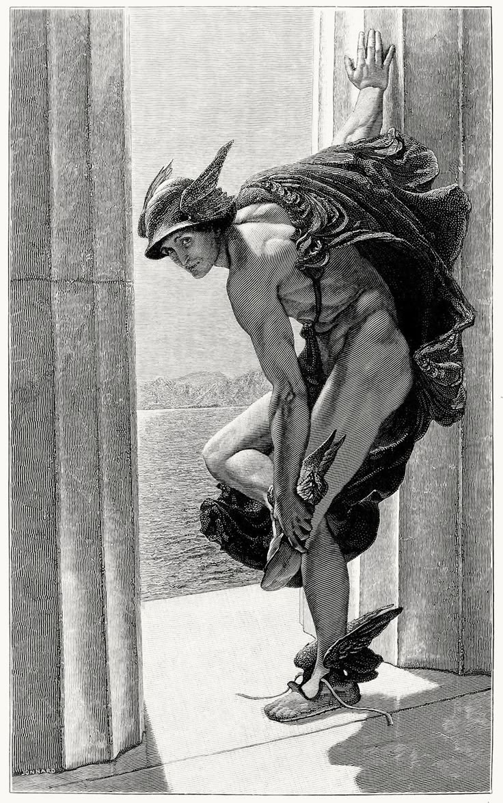
1. I go where they never can.
2. I float.
3. I never land.
p.s.
Basically went out my way to make a way for you!
That was the whole point
3/16/26
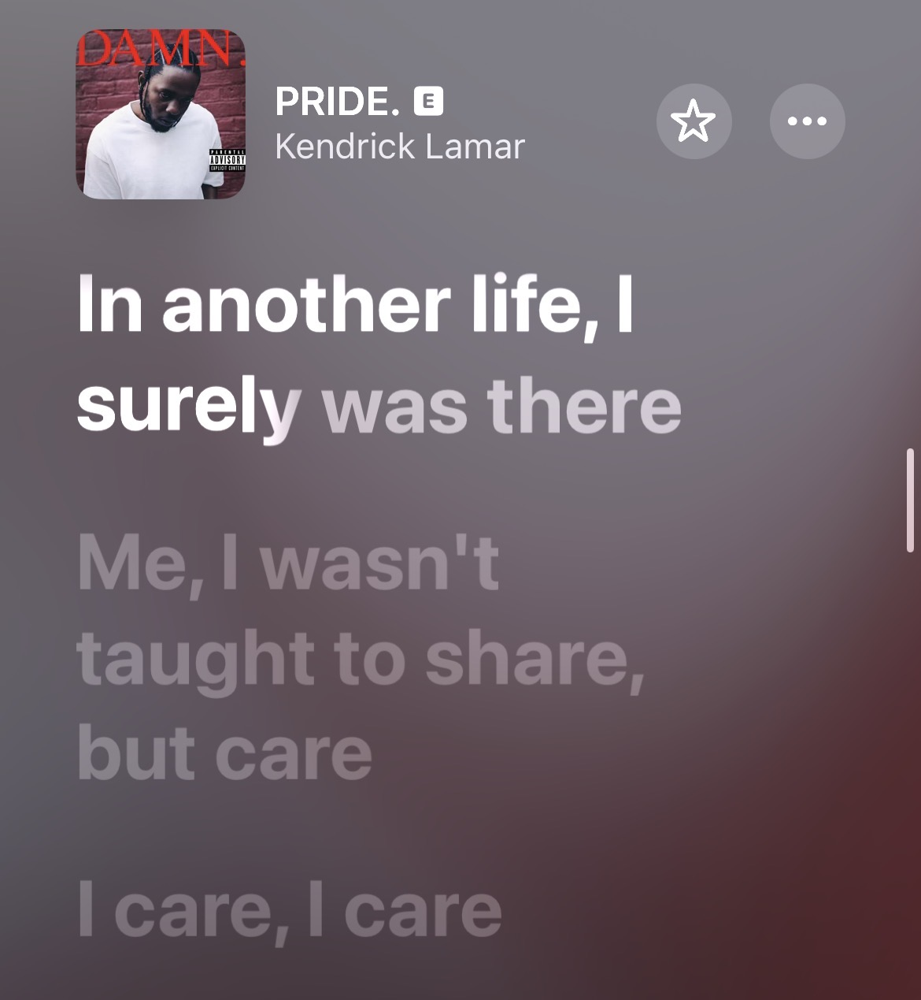
There are responsibilities that take a part of you when you accept them. There are things that have been done for you that you could never know. We all have a far greater responsibility to each other than culture would have you believe.
There are responsibilities that take a part of you when you fail to carry them. You simultaneously are changed by the (in)action of changing another. There are causes with effects that take years to materialize.
There are responsibilities that take a part of you when you succeed in carrying them. Nothing is free. There is no guarantee that succeeding = net positive.
We owe each other.
I’m getting emotional
02/26/26
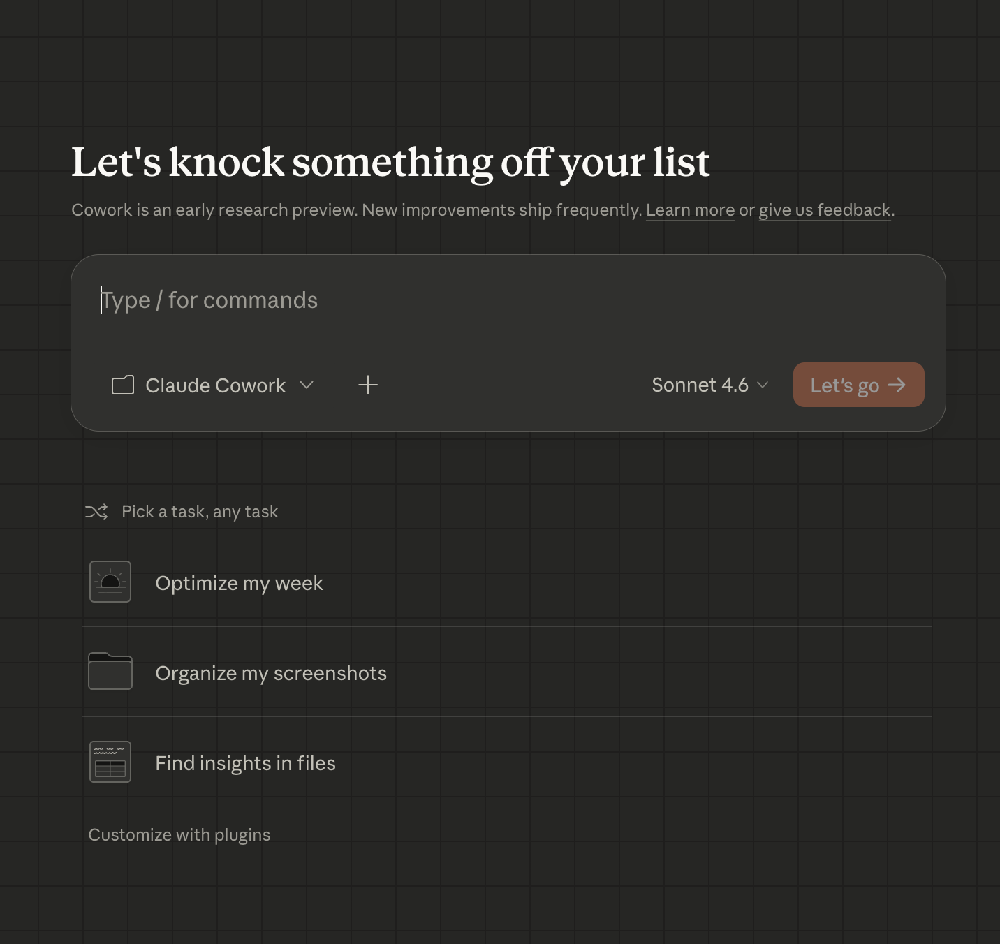
Claude Cowork is finally in a form that will genuinely benefit my day to day life. Maybe it already was. But scheduling really drives it home. I’m feeling so excited about the future that I don’t want to go to bed. I want to stay up and automate forever.
The Sheppard’s Sheppard
2/19/26
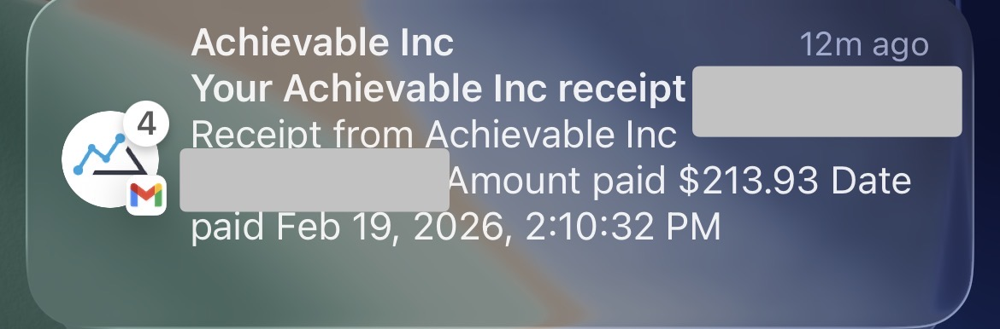
Already started looking at Series 66 stuff. I found the recommended study time last night. I bought Achievable this morning. What are the odds that it would already have my birthday pre-loaded as my test date? Based on the recommended study time I discovered last night? Don’t you get it yet? None of us are in charge!
ONE AND DONE
ONE DAY OFF
ONE MORE TIME
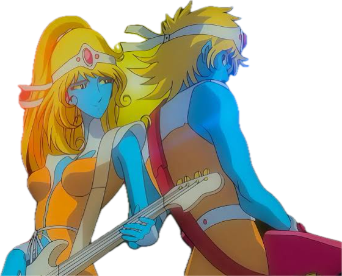
How could I ever forget?
2/18/26
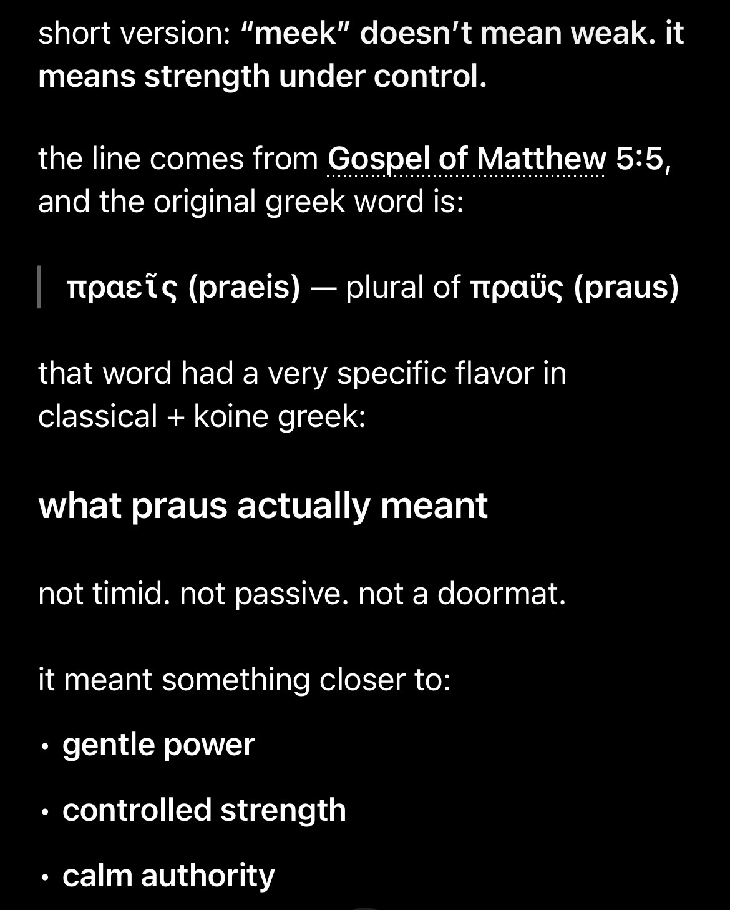
There comes a time when you can’t keep waiting for others to get it. How tragic. You must go alone if they’re ever to stand a chance.
Even after all of this?
2/17/26
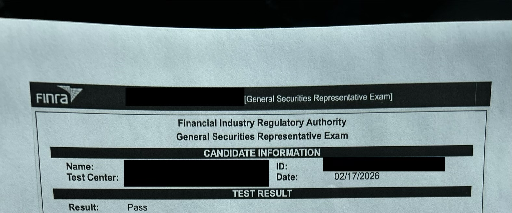
I am a translator. I bring insights from the spiritual to the material. I was meant to show. Maybe lead one day. But influence always.
You didn’t actually think it was a question did you? You were waiting to see what happened?
I already told you!
Not because I believed myself. But because I WAS SHOWN!
On Daft Punk, Esoterics, and Everything in Existence
2/14/26
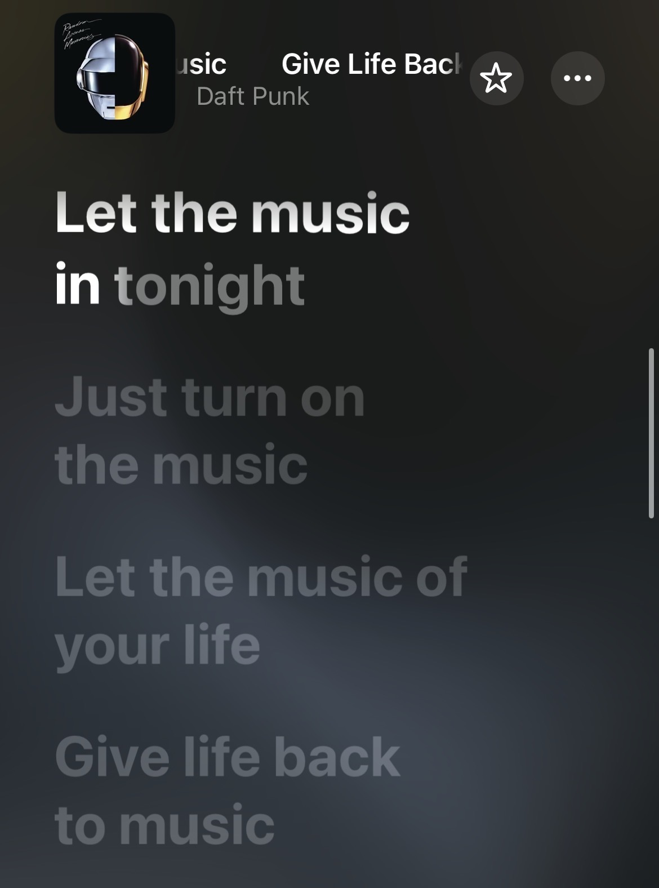
This is deeply esoteric and life changing advice btw. This applies to everything in both the material world and spiritual realm. They must have consulted Rick Rubin for this one.
1. Let It In (Just Turn on the Music!)
Open yourself. Press play. Sit down. Stop resisting.
TURN THE ANTENNA ON.
This is you consciously allowing signal from the collective field to enter your body.
You don’t force it. You receive it.
1a. (You Will Be Changed)
This part happens to you.
Music moves you. An idea lands. Your nervous system rearranges.
You don’t “get inspired.” Inspiration inhabits you.
Input always comes before output.
You are a conduit.
2. Let the Changes Inside of You Change the Outside World
Now you act. Not from effort — from embodiment.
You translate what passed through you: sound, words, movement, decisions.
Your internal shift becomes external form.
This is creation. Not invention.
Conversion. Signal → structure.
3. Return the New, Changed Thing Back to the Source (Give Life Back to Music)
Don’t keep it. It isn’t for you.
Release the song. Share the art. Live the truth.
You give it back to the same field it came from.
Someone else receives it. The cycle continues.
Receive → be changed → express → return
Tune in → become → transmit
Don’t you get it yet?
You are not the source.
You are a relay station.
Music doesn’t originate in you.
Ideas don’t originate in you.
Love doesn’t originate in you.
They pass through you.
Block the input, nothing real comes out.
Block the output, energy stagnates.
Life only exists in circulation.
This is how culture breathes.
This is how spirit moves.
This is how art stays alive.
This is preprogrammed recursive creation.
This is how WE ascend.
Some of the inside graves.
2/14/26
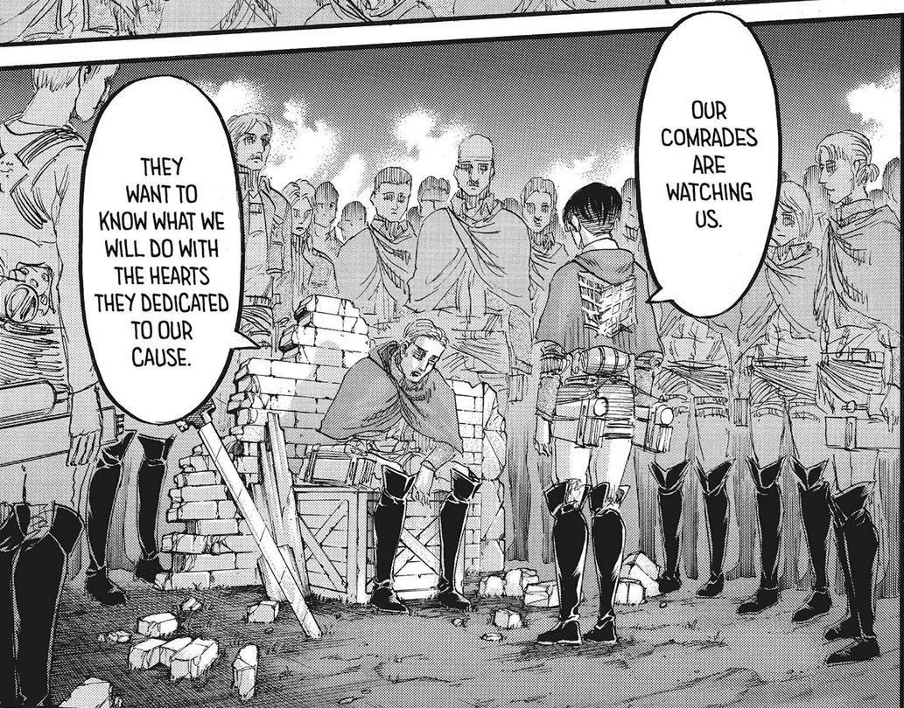
Do you realize how lucky you are to have made it this far? The time for enjoyment has to pause for a moment. We need to ascend while we have the chance.
You might have a second lifetimes-worth of time to have fun. You have to secure your right and ability to make it there.
It was never a promise that it would keep being so easy.
Catch up 😹🫵
2/13/26
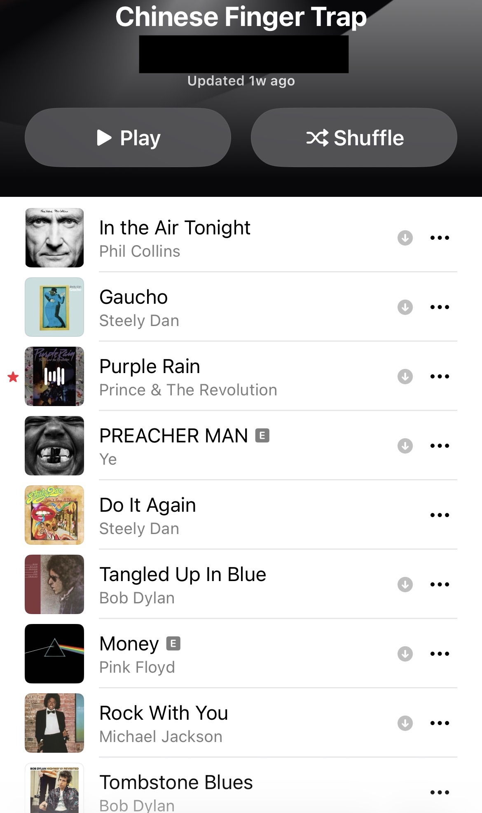
ITS ALL SUPPOSED TO BE CATHARTIC!
YOU DON’T HAVE TO WAIT. DON’T YOU GET IT YET?
THAT WEIGHT REPRESENTS SO MUCH MORE THAN JUST THIS SET. BECOME SOMETHING MORE.
I NEVER WANTED TO BE YOUR WEEKEND LOVER! PLEASE! YOU HAVE TO GET IT. MAX OUT EVERYDAY. YOUR ENEMIES JUST TOLD ME YOU COULDN’T EVER DO IT! GO!
HONEY, I KNOW, I KNOW, I KNOW TIMES ARE CHANGIN! YOU HAVE TO KEEP GOING. YOU WERE MEANT TO KEEP GOING! IMAGINE WHAT YOU COULD BUILD. LAST ONE BEST ONE.
IT’S TIME WE ALL REACH OUT FOR SOMETHIN NEW.
THAT MEANS YOU TOO!
We Don’t Know What We’re Building
2/12/26
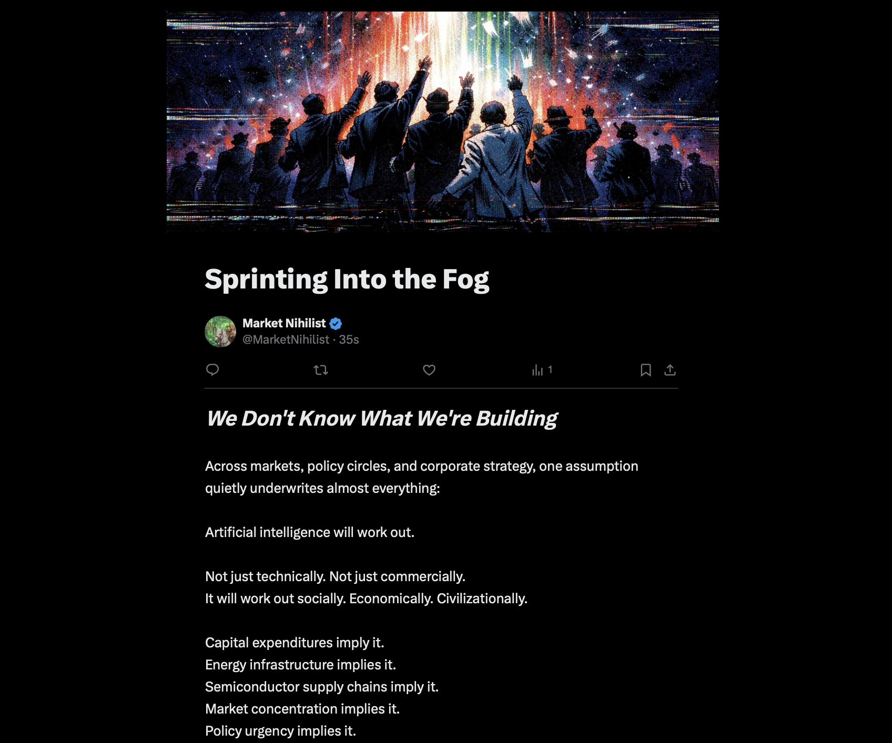
I’m only alive when exceeding my own limits
2/11/26
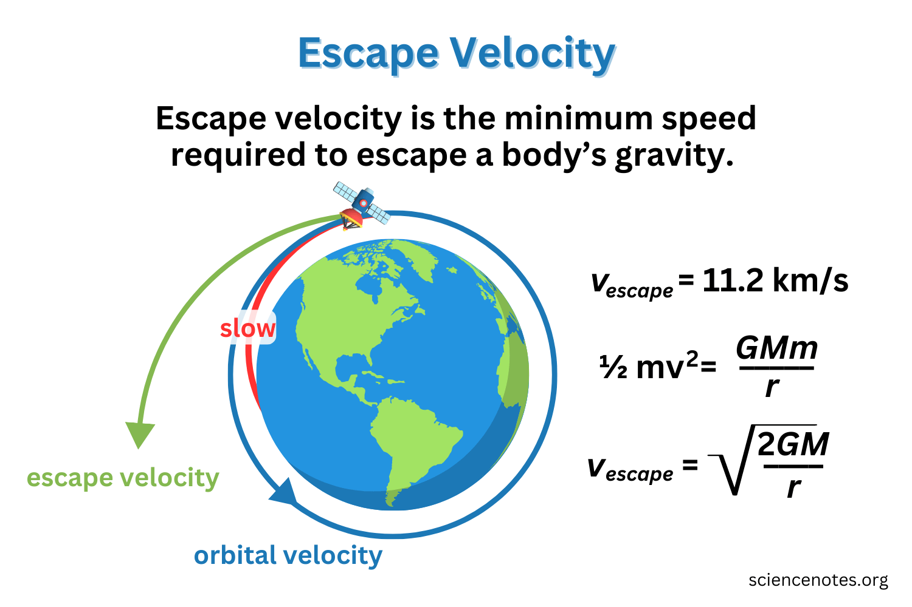
YOU CAN’T REACH THIS LEVEL BECAUSE YOU’RE TOO AFRAID TO FLOOR IT! BURNOUT! GO BEYOND FAILURE!
Strategically.
BECOME INTIMATELY AWARE OF YOUR LIMITS. TALK TO THEM. HOLD THEM. THEY WILL ALLOW YOUR EX-MACHINA IF YOU TREAT THEM RIGHT. YOU NEED THEM! YOU ARE THEM.
DON’T YOU WANT TO KNOW HOW I GOT THESE SCARS??
WE HAVE TO GO HARDER, BETTER, FASTER, STRONGER THAN WE ARE PHYSICALLY ABLE TO HANDLE. NO TIME FOR CAUTION. THIS IS WHERE WE ASCEND.
I’M CLOSEST TO GOD WHEN PUSHED PAST DESTRUCTION. IT REMOVES ALL NOISE. CLEARS THE SPACE. ALLOWS THE SIGNAL TO COME THROUGH CLEAR.
I’VE BEEN TRYING TO TELL YOU! THE MEEK ARE INHERITING THE EARTH RIGHT IN FRONT OF YOU. WON’T YOU JOIN US?
I’M NEVER WRONG, ONLY EARLY. ONE AND DONE.
One must imagine us chilling
2/8/26
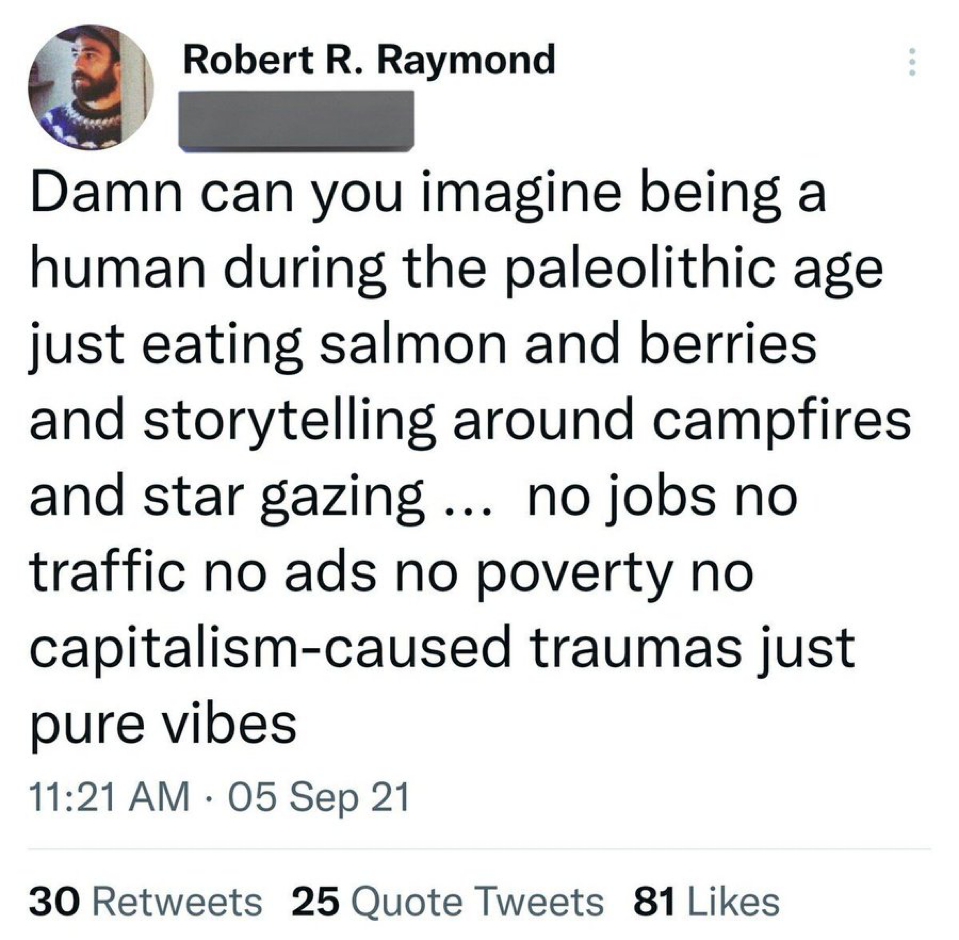
The assumption that we were able to live like this is so removed from reality that I don't even know where to start. This is a great example of the separate realities we all live in that have made it impossible to reconcile our differences. Right now is literally a completely connected extension of the same struggle we had then. We’ve always wanted to only eat, sit around campfires, and tell stories.
We are STILL trying to make that possible. We’ve never had it. We are 2000 years into this attempt at finally attaining leisure.
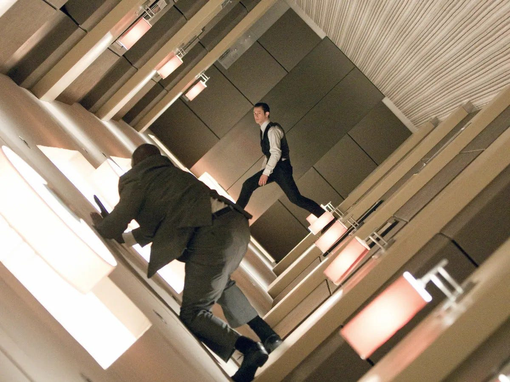
People are so deeply embedded in systems and abstraction that they don’t understand how bad it could be. They’ve allowed themselves to be recursively ushered deeper and deeper into the fractal matrix. How do you reach someone like this? How do you begin to relate?
We want the same things! But you need to wake up again.
Related Reading: ‘The System Is The Substance’ on MarketNihilist.com
I float! I don’t ever land.
2/5/26
I ONLY LOOK WRONG RIGHT NOW. WHEN WE LOOK BACK, YOU’LL AGAIN BE FORCED TO SAY “HOW DID HE KNOW?”
BECAUSE I WAS SHOWN. I NEVER KNEW. I ONLY FOLLOWED. DON’T YOU GET IT YET?
I TAKE MY SERIES 7 EXAM IN 12 DAYS. I HAVE LIVED ENTIRE LIVES SINCE I STARTED STUDYING. I CAN SEE THINGS YOU CAN’T BECAUSE I CARE AND BELIEVE ENOUGH TO SEE THEM. I WAS MEANT FOR THIS REGARDLESS OF HOW MUCH I WANTED TO BE MEANT FOR SOMETHING ELSE. BEING PRESENT IS HALF THE BATTLE.
IN 2023, I WAS TOLD IN CHURCH: “STAY AWAKE!”
I HAVEN'T SLEPT SINCE. I WILL STAY THE SHEPHERD SO THE SHEEP CAN JOIN ME IN REFUSING TO BE THE WOLF.
I HAVE FIGURED THEM OUT! I AM A STRONGER WOLF THAN THE ALPHA, AND I REJECT WOLFISM! AT LEAST IN IT’S MOST BASE FORM.
THE WOLVES WERE MEANT TO PROTECT THE SHEEP FROM FAR GREATER FOES.
WHEN IT'S DARK, YOU DON’T KNOW WHERE YOU GOIN! NEED A LIGHT-BEARER TO LEAD YOU HOME!
2/1/26
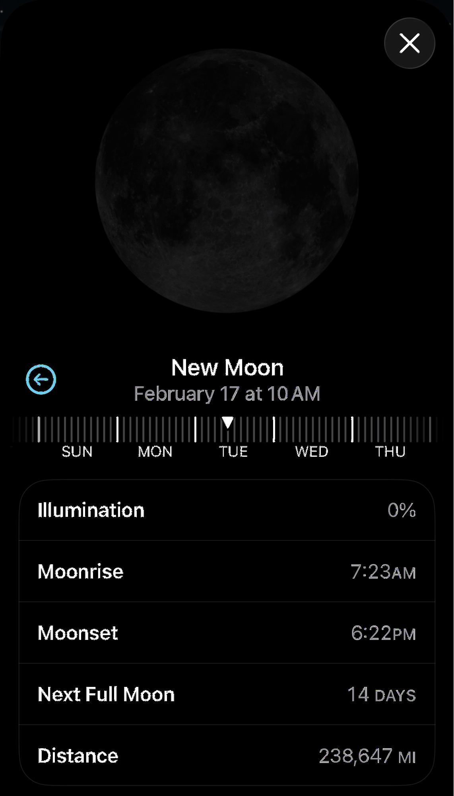
The synchronicities always hide where you were going to look
Last new moon, I had multiple breakthroughs in self, relationship, etc that also coincided with the movement of neptune into aries.
Today is a full moon. I just happened to notice it outside and checked to verify. Yep full moon. I wonder when the next new moon is. You wouldn't believe it, but it is the date of a very important exam I am taking. I have studied for it for almost a year due to scheduling issues.
I was not aware of any of the moon stuff when I scheduled the test, but when I saw the full moon tonight, I consciously thought: “what if the next new moon is that day,” and that is what inspired me to check in the first place.
The way I see it, the new moon is bringing a new era either way. One where I finally have passed this test, or one where I am free from this year-long “any day now”, and free to start studying and attempt at passing from scratch.
I choose to believe the former.
02/01/26
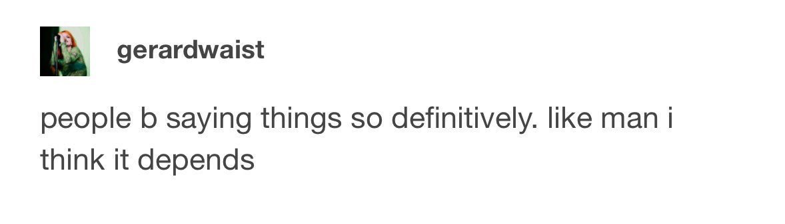
The nuance is all that exists. There aren’t any facts. I know what you’re thinking - “that would mean that I have to analyze literally everything to ever move again” - YES!
The luxury of the status quo is long gone. Do not follow it to your death like the boomers. Adapt, and understand, and overcome.
The status quo needs to be discovered by new, brave men. We must look past stated preferences and allow the truth to reveal itself.
1/28/26
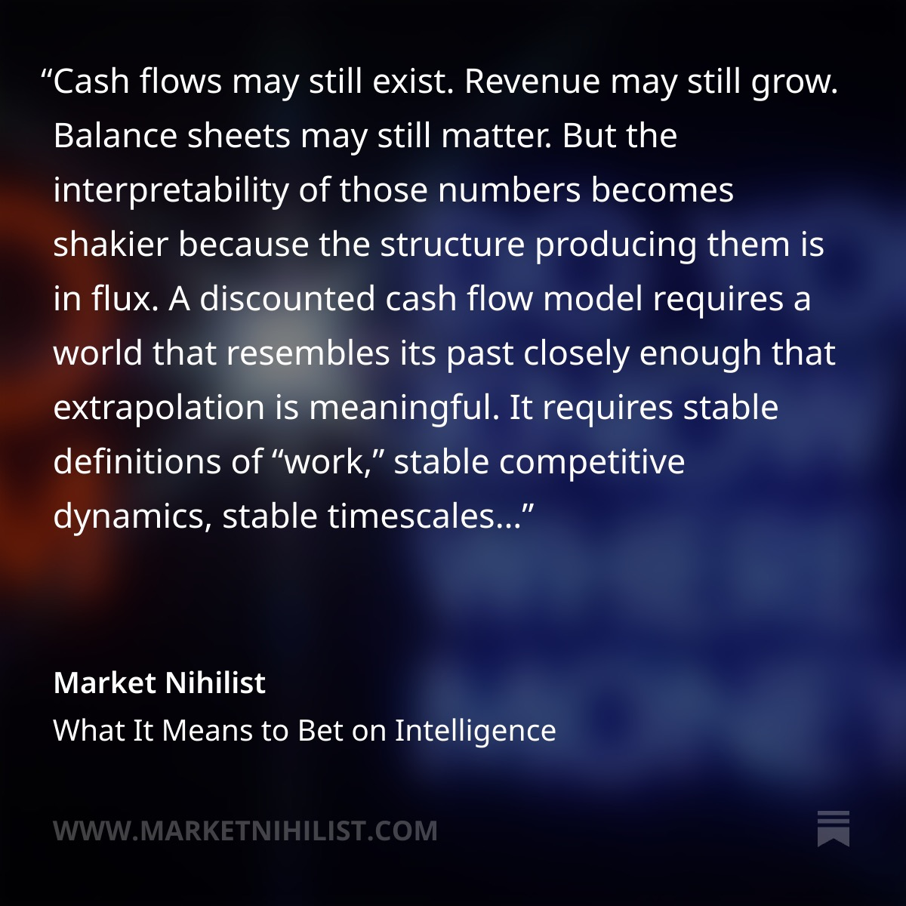
1/24/26
THE HARDEST PART OF WAR IS LEAVING THE ABSTRACTION
1/17/2026
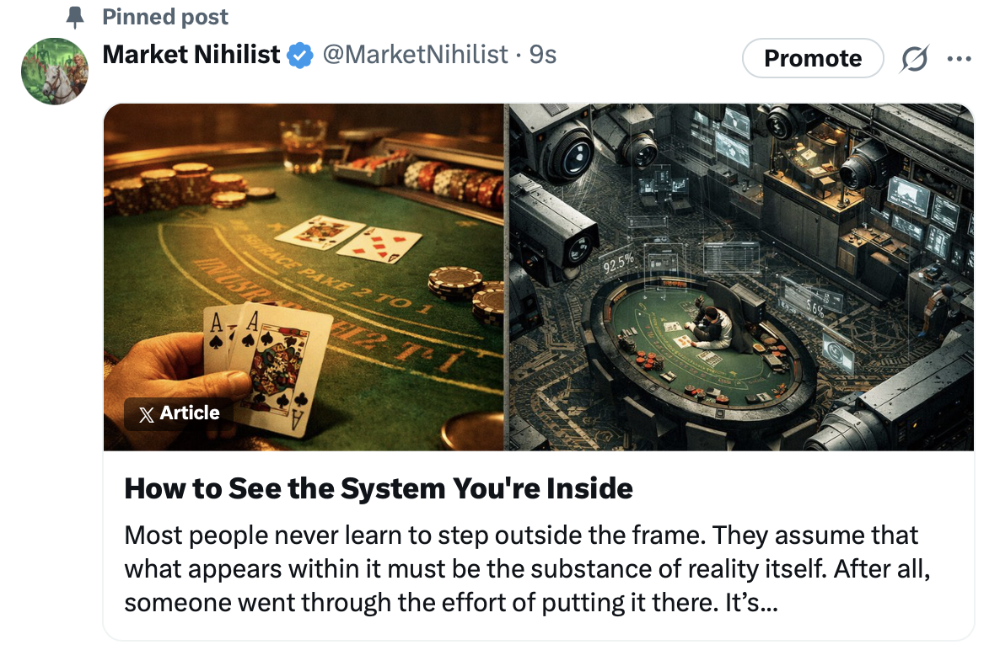
THE SYSTEM IS THE SUBSTANCE EXPANDED
The careful curation of reality
1/6/2026
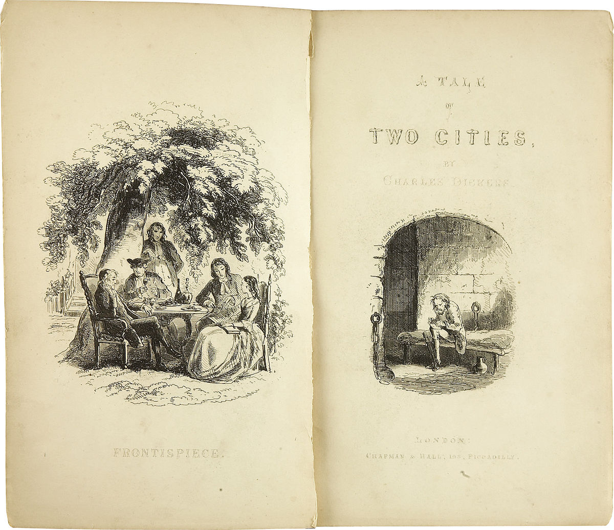
Most people never learn to step out of the box. They assume that what is in the box must be the substance of the box. It is the content afterall, and someone went through all of that trouble to put it in the box.
It is more useful to recognize the box itself. Who made the box? Why did a box need making? And, of course, what is outside of the box?
What if the box is inside of another box, or God forbid, even a bag? These kinds of questions will often be met with blank stares, because from within the box, all there is are the contents of the box, and the high, surrounding walls.
“What is the point in speculating about such things?” There are other contributing factors to the causes you presume to know. From within the box, you aren't wrong. Based on all available evidence, you’ve drawn the correct conclusion.
But what if there is more evidence! And what if the evidence you have was specifically curated to lead you to a certain conclusion. The mistake isn’t believing the contents of the box, it’s assuming the box is neutral and objective.
When playing blackjack, it matters if you are in a casino or a friend's basement. Do not think that the outcomes at the casino will mirror the outcomes in the basement.
1/1/2026
As I reflect on 2025, one thing is clear to me. My decision to follow my intuition out of music (the love of my life) was the single most important turning point of my adult life. I have always followed heady concepts like AI, space, conspiracy, theology, etc etc (thanks Joe Rogan). So, when early versions of Dalle started rolling out in 2021, I was excited and intrigued. When early versions of mixing and mastering “agents” by Landr started rolling out in 2022, I knew the writing was on the wall.
So, I adapted.
I was already doing scattered web design and marketing work in tandem with the music services I offered. Ok, what if I go full time.
I worked as a marketing consultant, then a social media manager for my local dioceses, then a freelance frontend developer, then a contracted pr writer, before finally completing the full circle and returning to finance.
In this time, I read and read, and followed interesting blogs, and smart people on X. I began to realize that my habit of seeing multiple disparate ideas and industries as a unified system was actually becoming the way of the world, not just a beneficial perspective.
I expect that the next few years will be somewhat uncertain for advisors, but ultimately, I think people want to trust other people.
Even if that means you are paying someone to interface with the free robot for you.
But,
If that isn’t the case, there is no stopping it.
So, I will adapt.
Cross-domain systems thinking is no longer an option or a luxury. It is a requirement. The boomer matrix has eroded and all reasonable assumptions are now up for debate. The harsh truths are no longer avoidable.
Adapt or die.
Read my predictions for the 2026 market on MarketNihilist.com
And I’m a sucker for holding on so long
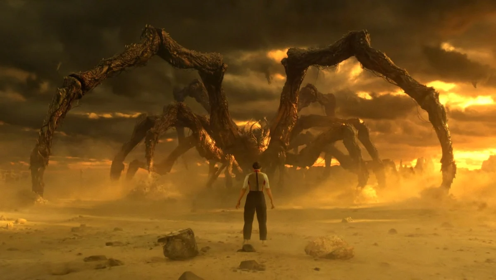
These people have no idea what their own show was about. They never knew what made it good. They were open, and adjusted, to any and all criticisms of the show. What is left is a Frankenstein's monster of trite ai writing, unresolved questions, and an ending that felt like it really had nothing to do at all with the original concept.
What did they do with all that money? What was up with the awful greenscreen? Did they spend a huge amount of money renting green screen stages and assumed that the money directly translated into quality? No need to do anything else? WHAT IS THIS
Any single person that ever watched season 1 could have written any ending at all that would have been better. Every season since 1 sucked. Season 5 - 2/10
How Crypto and Traditional Markets Are Becoming One System
12/31/2025
One last thought from 2025.
“What we are witnessing now is not crypto “replacing” traditional markets, nor TradFi “taming” crypto. It is something more subtle and more consequential: a convergence into a single, continuous financial system—one that operates closer to 24/7, spreads volatility across asset classes, and forces investors to rethink assumptions that once felt permanent.”
Read on MarketNihilist.com
Note from 5-24-25
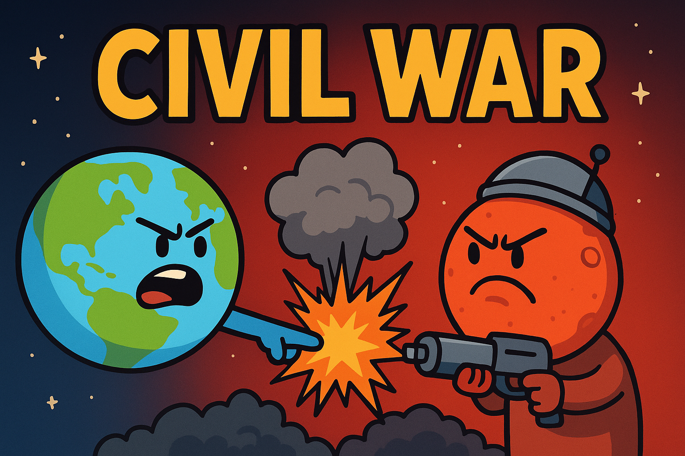
There is a very real possibility that Elon succeeds in his ambitions for Mars. At this point, here is how that might play out:
>Only conservatives move to Mars (this will give the left too easy of a dunk. We’re literally going to Jupiter to get more stupider)
>(The capital of Mars is like Austin and the major cities are like SF. The suburbs are like Nashville. The poor parts are like Dade County, Florida. Everywhere sucks.)
>Mars is successful enough, federally subsidized enough, and is home to a lot of talented and smart people (dumb ones too unless full fascist dictatorship by then)
>The tensions between the left and right never die down, only continue to grow from the 2025 point
>Eventually, its based to live on mars and cringe to live on earth
>The liberal US Earthlings (Britain) begins to lose control of its Martian space colony and the retards who run it (America)
>The Civil War that is predicted to happen in the 20’s is actually interplanetary
>(This time) Earth is destroyed in the war. Some survivors are brought to mars or left to try to recolonize the barren wasteland
>Roughly 6000 years later Martians make a Martian movie called “Earth Attacks!”
New Market Nihilist Article on Substack
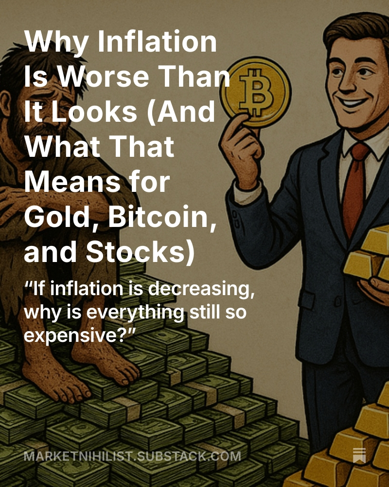
“Rising prices don’t always mean growth. Sometimes they just reveal how much value has leaked from the money itself.
Now look at the price of gold in October 2025… The market already knows what the dollar is worth.”
Note from 6-6-25
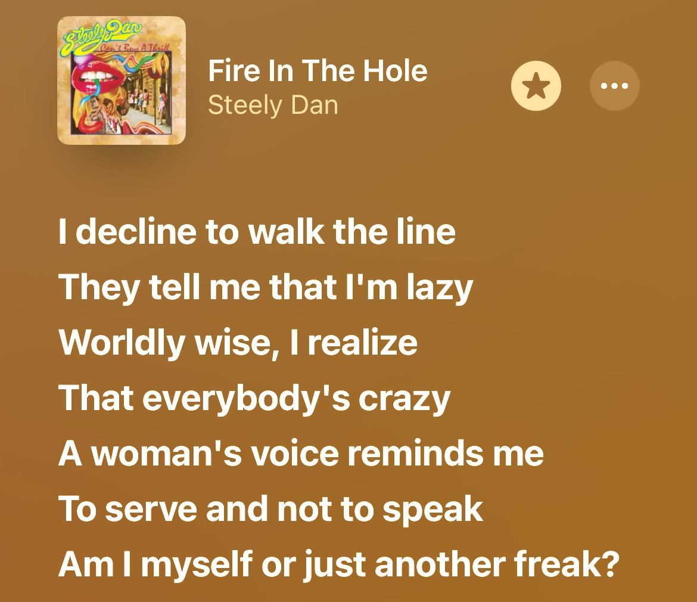
Steely Dan was so good bc they made MGTOW music. After a decade of CHUD TUNES from The Beatles, and UNRELATABLE chad rock from The Rolling Stones.
Did I do that??
10-18-25
>know real trade war with china is coming
>pre-emept the market crash by reacting to old news that can be explained away
>”oops!”
>coordinate with family to short bitcoin and buy back with perfect timing
>real trade war starts
>markets dont react
>mfw
Note from 6-3-25
A way for people, especially those without the time, background, or bandwidth to grasp the cosmic depths he understood, to still reach the same end goal. No need to understand the machinery under the hood. Just plug in, follow the steps, and you’re on the path. True salvation as a kind of intuitive user interface.
Beneath the CMS is the code. Beneath that, the infrastructure of the internet. Then the computer itself, then electrical engineering, physics, consciousness, ad infinitum.
Jesus, as a true teacher, translated what might’ve been an endless knowing of the universe’s laws (its character, structures, and processes) into something digestible. Not just simple, but actionable. Not just a summary, but a path. Think IKEA manual for assembling a jet.
Psychologically, or even spiritually (astrally?), we may need an idol. A figure like Jesus who can bear the weight of that cosmic abstraction while we remain innocent, unknowing, and spiritually porous. Without that covering, we’re basically unprotected children. Sitting ducks for malevolent entities who can find us precisely because we’re exposed. In this sense, Jesus doesn’t just teach; he shields. Like WordPress quietly handling your backend security while you drag and drop images onto a page.
If the pyramids are 30,000+ years old, how many times have humans reached cosmic understanding, only to lose it again? How many cycles of “figuring it out” have disappeared beneath sand, water, and time? Maybe the only durable transmission is not the knowledge itself, but the format: simplicity, symbolism, executable action. A template. Do this, click here, save.
In that light, the idol of Jesus becomes a kind of spiritual .zip bomb. What looks like naïve devotion (“just believe”) is actually an unpackable, encrypted understanding of natural law. Cloaked in love, obedience, and humility, but wired with the architecture of the divine.
Note from 6-8-25
The internet
Conspiracies
Unpopular history
Bitcoin
Crypto environment
Right wing politics
The idea that life could be better with less but via ‘homesteading’
AI
The technocrats have used all of these since roughly 2000 to build slow, then exponential momentum to support their aims.
-The internet lays the foundational infrastructure.
-Bitcoin builds more intentional infrastructure (electricity and compute for mining).
-Meme coins reveal the absurdity of financial markets, and all traditional institutions.
-Q anon introduces the idea that what you see is fake anyway, so there is no reason to feel sentimental about it. Introduces conspiracy/pattern matching frameworks for approaching the world.
-Manosphere tells men who have been disenfranchised that they are wanted for their ability to be responsible and work.
-‘Homesteading’ takes it a step further. “You will be happier and more appreciated working from sun to sun in the woods like an animal”. Aka “you will own nothing and you will like it.”
All of this was planned to create the infrastructure and public perceptions required to usher in the AI era with full support and little startup friction. AI is the technocrats secret weapon that will allow the domination of all other groups grasping at power.
The deal between Palentir and Trump leads me to believe that this goal could be total enslavement.
Add in neuralink, spacex, and tesla, and it's hard to imagine that things aren't going to shift in that direction.
Note from 5-09-2025
10-18-2025
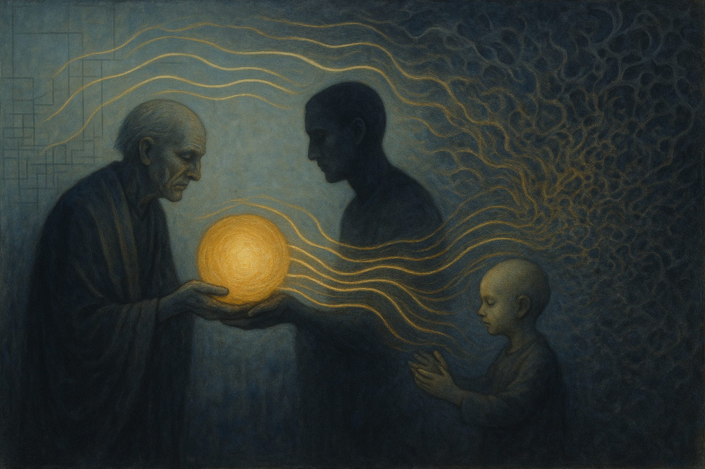
There may come a time when the transfer of ideas across generations becomes functionally impossible—not just difficult, but incompatible. Not for lack of effort, but because the pace and layering of complex novelty (ideas, systems, memes, markets) grow so rapidly and abstractly that comprehension becomes inaccessible within a single lifespan.
With rapidly growing in technology being integrated into already complex systems, the rate of change doesn’t just accelerate—it compounds. And with each cycle, the distance from origin widens. Even genetically identical children born a generation apart could find themselves in worlds so different that the younger could never fully decode the context the older one lived in. The knowledge gap becomes less about information and more about paradigm—like trying to teach someone how to navigate a map that no longer matches the terrain.
At some point, this hits a tipping point. A generation is born that cannot be integrated into the civilization their parents knew—not because they’re unwilling, but because that civilization has already dissolved and reformed under new logics, new languages, new layers. By the time someone is old enough to have children, they may already be obsolete—like a 60-year-old trying to learn code from scratch in a society where code is language, law, economy, and culture.
It’s not just aging—it’s desynchronization. And eventually, continuity fractures.
What do we do then? What can we do then? We would have to spend another 2000 years getting back to our starting point, AND fight against the reverse effect AND find a way to calculate the perfect rate(s) of change to maintain for healthy growth without risk of exponential implosion, all while trying not falling into a stagnated tyranny.
Maybe this is a way to accidentally reset. A “flood” of complexity. This certainly happened in micro versions countless times. A famous example is self-healing Roman concrete. We still cant replicate that. On a long enough timeline, it seems likely that this has happened at least a few times at a macro level.
The year of the personal singularity
10-17-2025
Where have I been? Everywhere there is to go without moving much at all.
My boy was born healthy, cute, smart, and with open eyes.
*
What's changed?
-Stable job “in finance”
-Watched the rest of the movies that are worth watching
-Really into Bob Dylan
-Dropped to sub 10%bf for lent just because (and to avoid being fat as I age and/or dying young)
-Writing a ton (just not here for some reason?)
*
My Schedule:
-Daily
6:05 wake
Coffee, creatine, vitamins while reading the Daily Reading on the USCCB site
Lift
Read X, Reddit, CNBC
Prob buy crypto
Play with son while wife showers
7:15 shower and dress, order a cold brew from D*nkin D*nuts
8:05 leave for work
8:10 dunkin
8:30 arrive at work
4:00 leave work
5:00 dinner
5:30 bath
7:00 baby bedtime
9:00 write
10:00 parents bedtime
-Wednesday
6:30am laundromat
8:00am store/haircut/errand
10:00 work
2:00 babysit
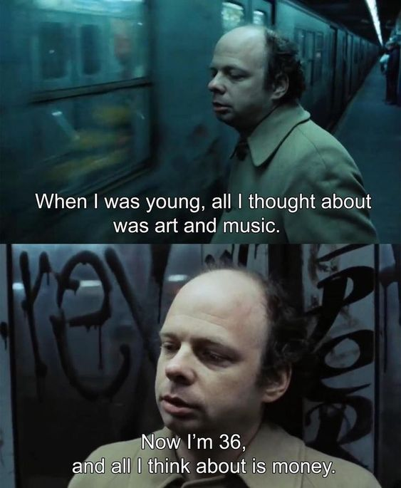
*
Fav new movies of the year:
Weapons
Longlegs
Friendship
(haven’t seen One Battle After Another yet)
Fav old movies of the year:
Annihilation
L.A. Confidential
Eyes Wide Shut
*
The housing market needs to crash so I can buy a home for my young family at a somewhat reasonable price. I refuse to be exit liquidity for boomers who are late to the covid housing cash grab. Value is something I bestow on your house when we agree on what it is worth.
The boomer wish to finally sell the house because the Zillow Zestimate 3x’d in 5 years, is not mine to grant.
I can tell you treated your house like shit from the photos that YOU took. You will never move to Florida.
*
Had a very Steely Dan summer for the 5th year in a row.
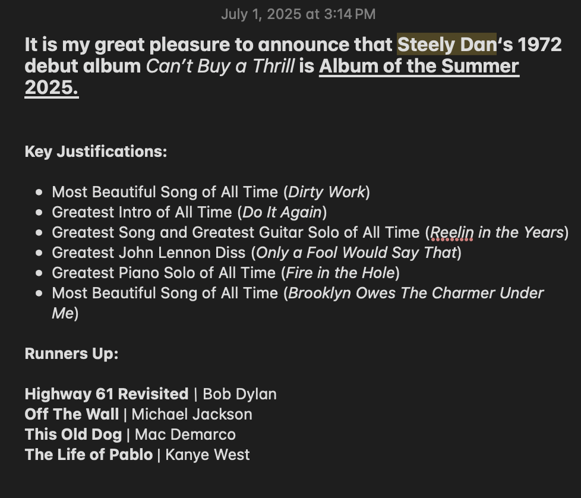
Having a very Miles Davis fall.
*
I’ve been right about everything. And I don't love that that’s true.
Here’s another prediction: stocks, BTC, gold, real estate, etc. will go straight up until a considerable amount of US debt is erased. This is already happening.
Some past predictions:
2014: i want to make hip hop music and clothes.
2016: Unreleased podcast and comedy sketches.
2018: Hip hop is over. The ending was kanye’s multi album summer.
2021: very last chance to establish one’s self as musician/creative
2022: making music traditionally is over. (Landr released a mixing/mastering ai and i ran for the hills.)
We need religion. Now.
Retvrn to tradition.
2023: Trump/Elon technocracy
2024: only generalists survive. Specialists cope.
Cash will be worthless and the middle class will be gone. You will work in labor or be a millionaire. This is the start of the last chance to escape perpetual poverty.
2025: trump is intentionally debasing the dollar to pay back debt at a cheaper price in real terms - hard assets!
━━━━━━━━━━━
━━━━━━━━━━━━━━━━━━━━━━━━━━━━━━━━━━━━━━━━━
No posts from 1-29-25 to 10-17-25 due to paradigm shifting.
━━━━━━━━━━━━━━━━━━━━━━━━━━━━━━━━━━━━━━━━━
━━━━━━━━━━━
The year of the father.
1-29-25
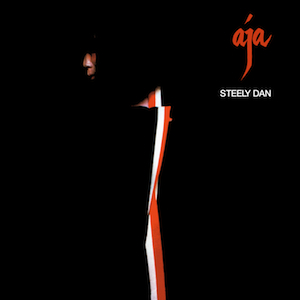
Spent the first few days of the year making NFL player highlight edits. Building my son’s room. New car for wife. No longer losing weight at 1lb/day when I choose (more like .5lb now), I must be getting old. Music -> Web dev -> Writing -> Finance at absolute top speed. Watching more movies than most people (Waterworld goated). My wife will have our baby within three weeks. The year of the father is upon us.
Thinking about:
- Orthodoxy
- Career implications as the AI future starts to take form (deepseek aaaahhhh)
- Crypto (always <3)
- JFK
- Kubrick
- Elon’s motivations
- Non-slop activities for kids (NSAK)
- Technocracy
I know what you’re thinking…
First try: 69% (one short)
Second try: 69%
Third try using Achievable: 😏
This year (2024) I have:
-Passed SIE
-Learned to code
-Made an(some) app(s)
-Made too many websites
-Worked as a freelance PR writer
-Passed my SIE
-Got married
-Impregnated wife
-Read a ton
-Wrote a ton
-Paid off my car (Net worth 📈)
-Paid down credit cards
Mr. Cool Guy PFPKS (Professional Football-Playing King in Space)
Updates to ihaveaproblem.xyz
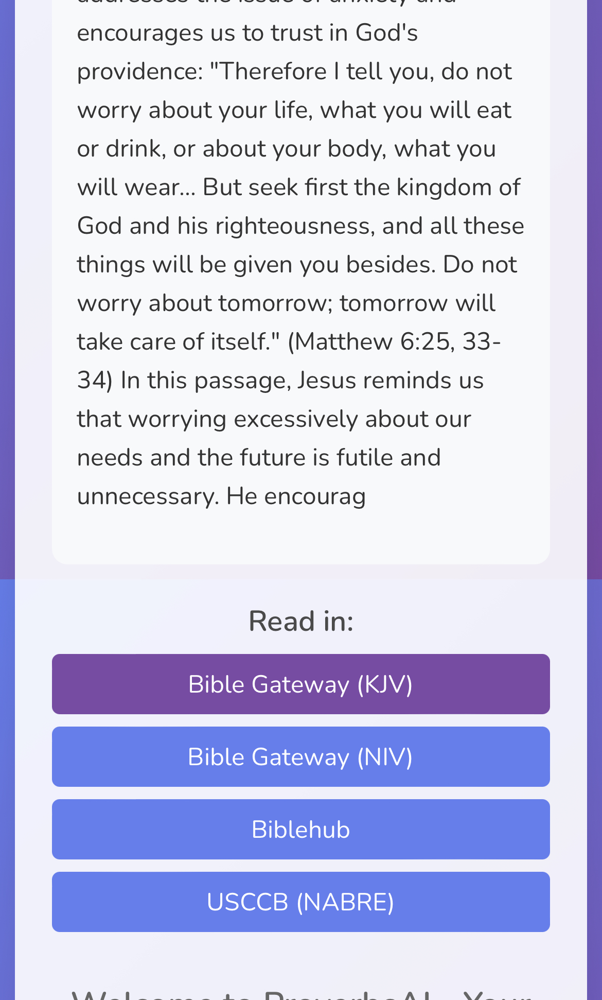
The branding of this app was bothering me so I changed it from ihaveaproblem(.)xyz to ProverbsAI.com, and added a few new features.
CHANGE LOG
-New Domain (ProverbsAI.com)
-Links to supplied verses in various versions of the Bible (NABRE, KJV, NIV, Etc.)
-Various visual tweaks
P.S. I am procrastinating on my MIDI app - I promise I’ll get back to it.
It is going to work out
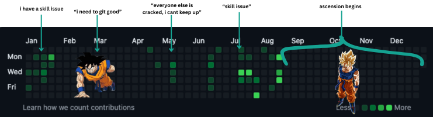
Learning to program has been quite challenging, but is now becoming super fulfilling. I am not there yet, (and by some standards, may never be) but I have finally hit a stride where I am able to sit at my desk and simply do things.
I am currently working on an app that ties my music/engineering background into my programming endeavor.
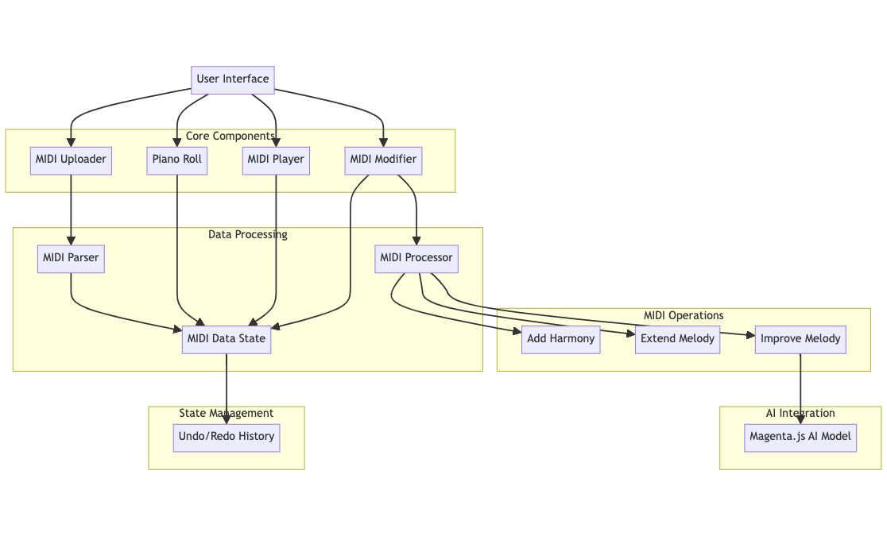
This app is a web-based MIDI editor and enhancer. It allows users to upload, visualize, edit, and enhance MIDI files. The key features include:
This is a much more complex project than I have done yet, but I cannot wait for the results. Roughest draft:
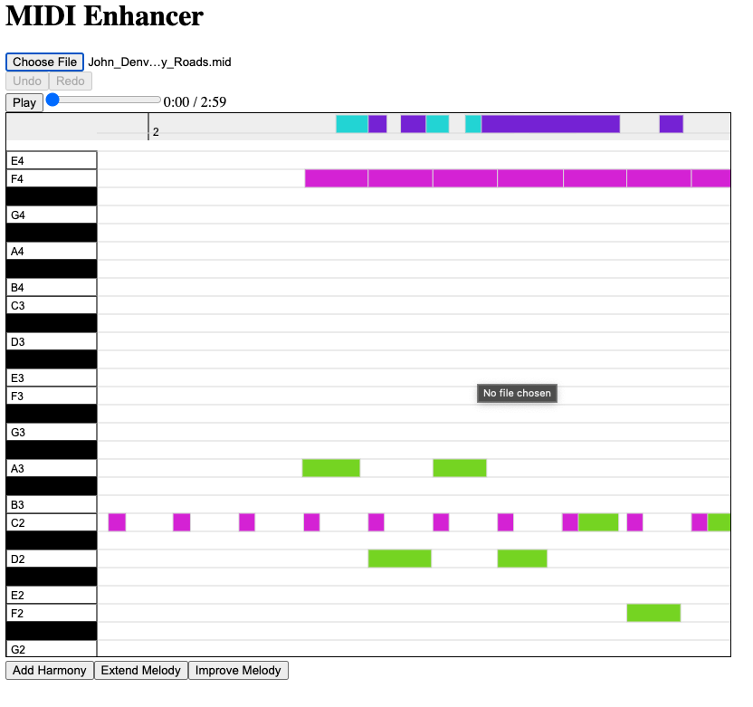
It is able to load all of Country Roads in the (laggy) HTML5 canvas - that has to count for something, right?
NEW AI Webapp
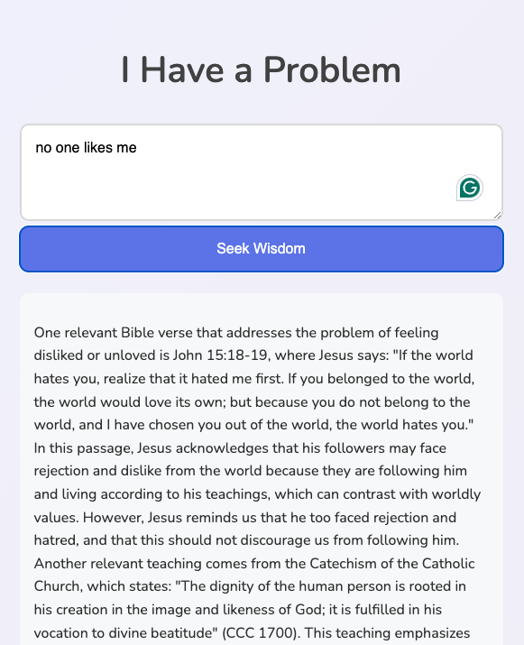
I’ve created an app powered by Claude that helps one solve their problems using wisdom from the Bible. This app takes your problem (prompt) and searches the Bible and Catholic teachings to recommend jumping-off points for reading scripture. This app does not alter Biblical texts, and simply recommends passages. This is, of course, inspired by TempleOS (RIP Terry).
Visit ihaveaproblem.xyz to try it now!
Diagram of the architecture below.
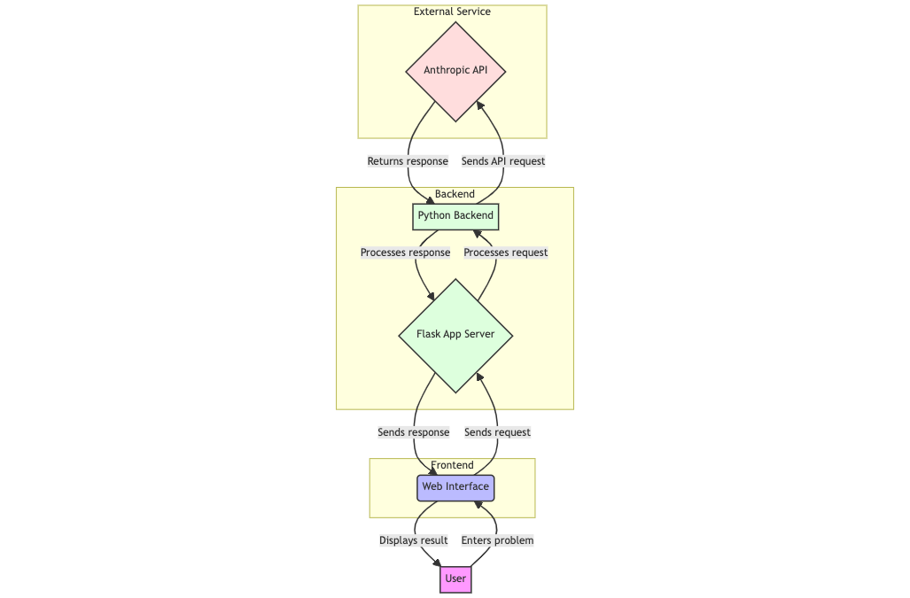
I’ll find a reason to use this - and so will YOU :o
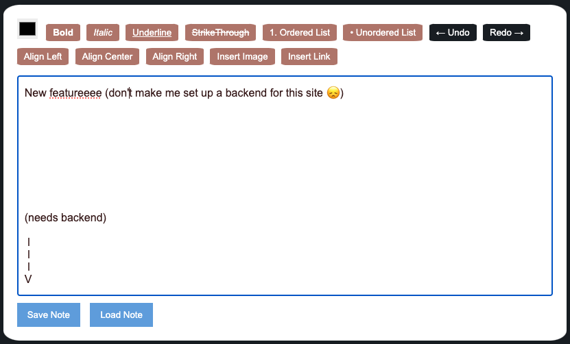
I awoke in a sweat after a premonition that revealed to me that I should make a text editor immediately for no reason. I’m at the point in my coding journey where I am just trying to make every (basic) thing just because. Would be cool if I could use this for a comment section. Better yet, somehow replace google docs in my workflow and make my own text editor w/ api to keep the same process but all proprietary.
EDIT
Python is slop and i hate it so i won’t use it. Download or load your txt files from your phone or desktop using only JS. This is an act of resistance. I’m going to build this out with node if i ever want a backend.
Putting long-form writing out there
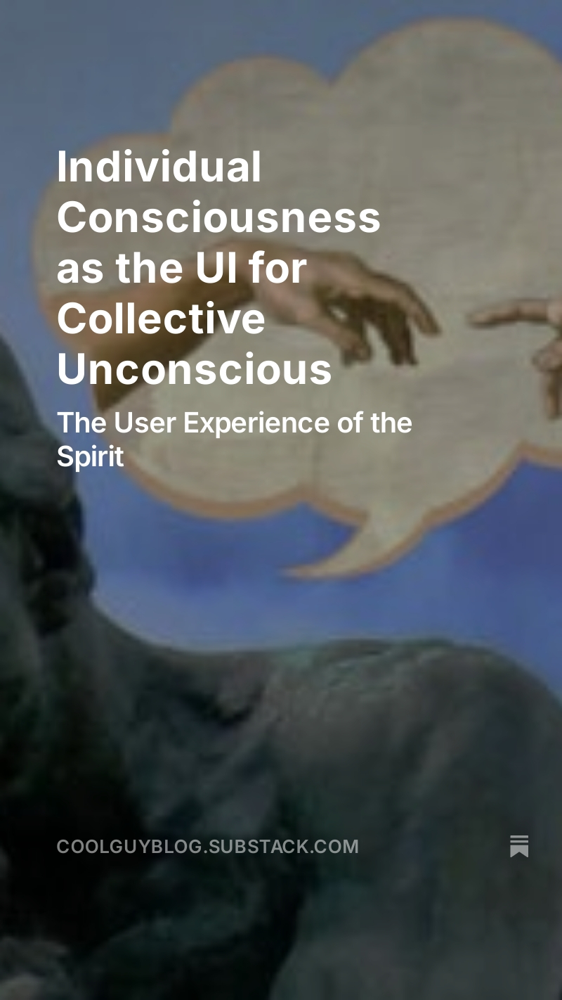
Python can’t be that tough
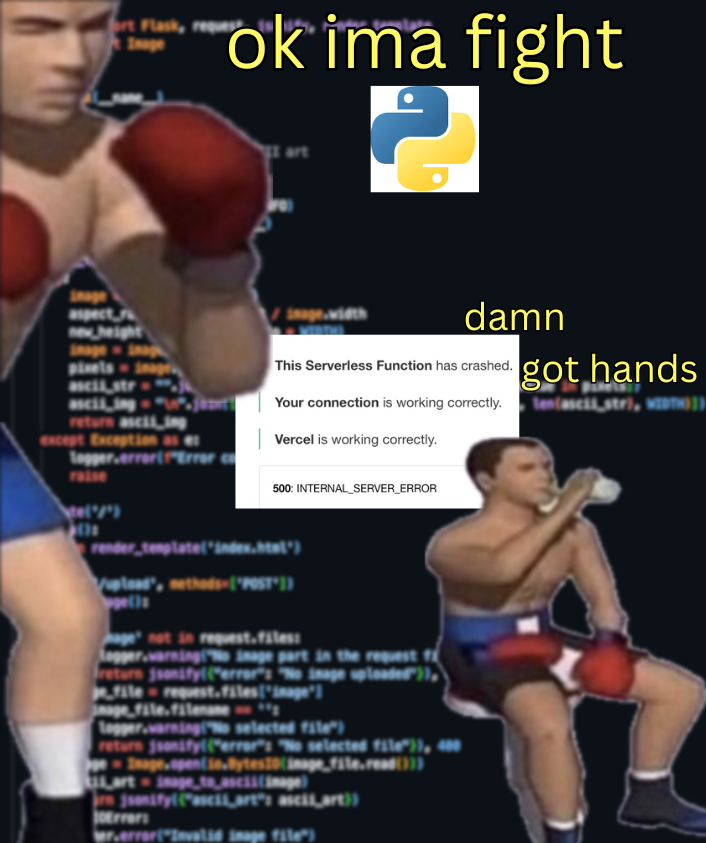
Trying very hard to create a web app hosted with Vercel that will convert uploaded images to ASCII. I do not know how to do any of this, but still made a lot of progress today (and this was the second project today, give me a break). Ideally, I want to create an API to communicate with a page on my website. (If any Python devs see this, please teach me something)
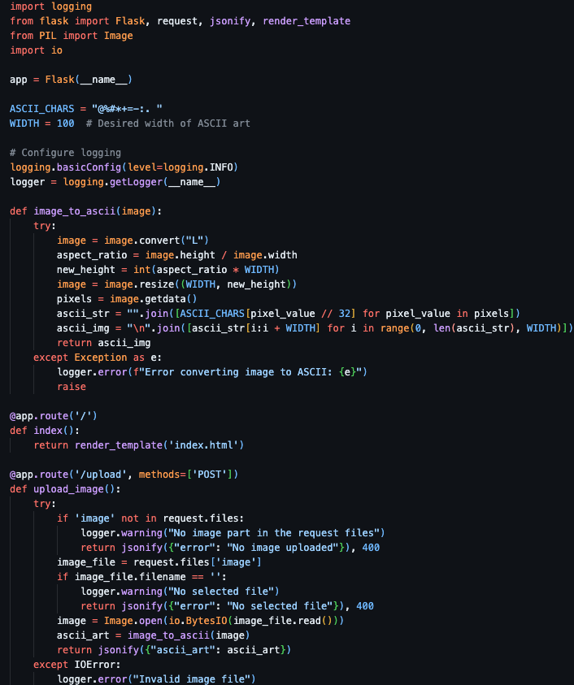
There is some kind of logic error in the script that I do not have the energy to resolve today. I would finish this tomorrow, but tomorrow is the sabbath. So I will finish it and report back on Monday.
**EDIT**
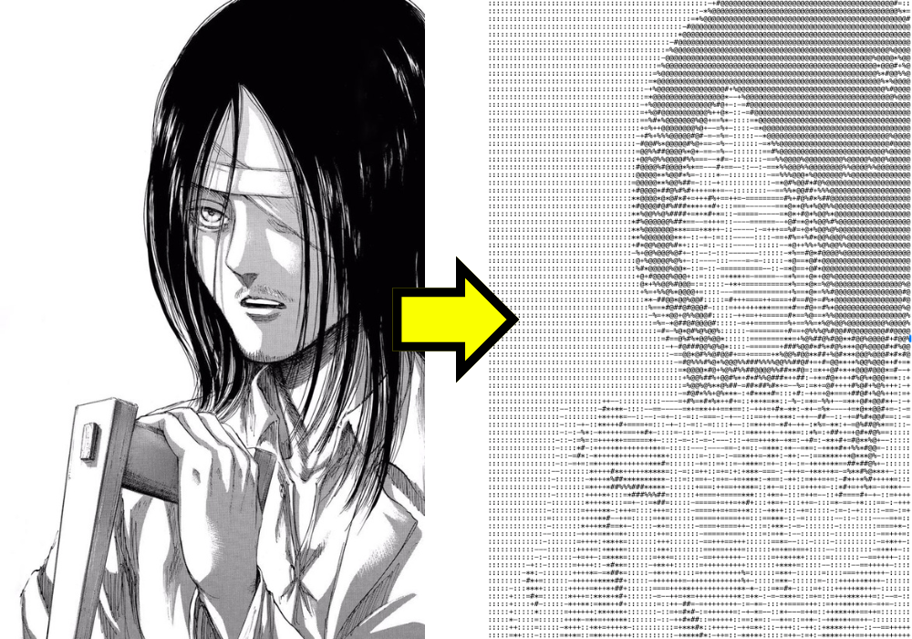
It’s Sunday and I realized that this is not work when I am having so much fun. I made a bit more progress:
- Frontend online(!)
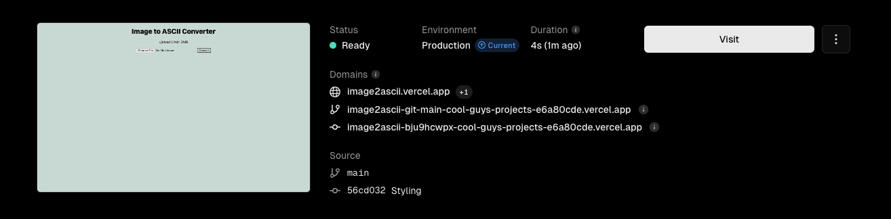
- Rewrote entire script (with Claude’s assistance)
- Implemented 3MB file upload size in script; Vercel has a max of 5MB total per request, so I’ve allocated 2MB of that for the function with a buffer zone
- CSS styling (lol)
- File hierarchy overhaul
- Found new issue to address tomorrow
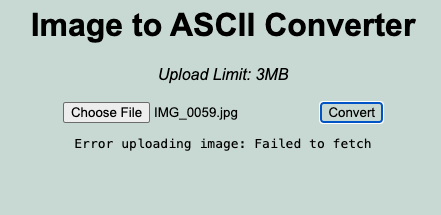
Big things are happening with my very original, long-awaited mobile/browser game.
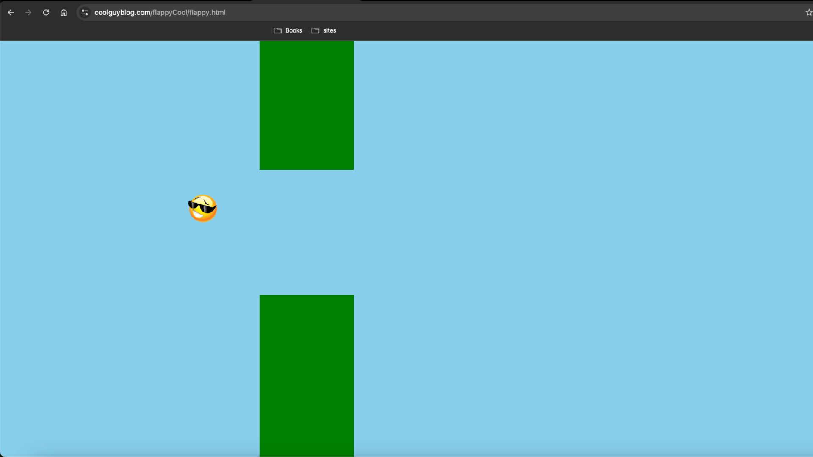
Updates:
Further Mobile Optimization
- Window and game components adjusts to screen size
- Double-click zoom disabled
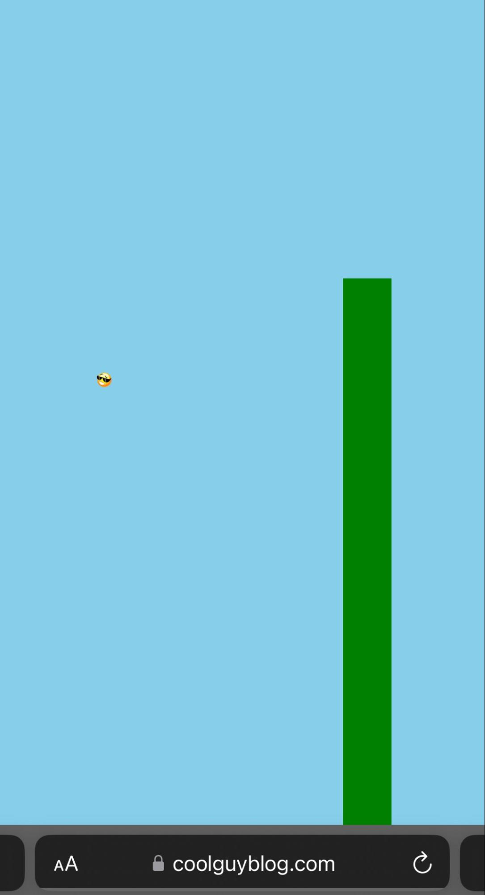
Visual Updates
- Boxes are now green like grass or the leaves of a tree
- Background is blue just like our sky
- Consulted legal team
- Double checked; zero S*per Mar*o references
- Game Over and game restart updated
- Added new font
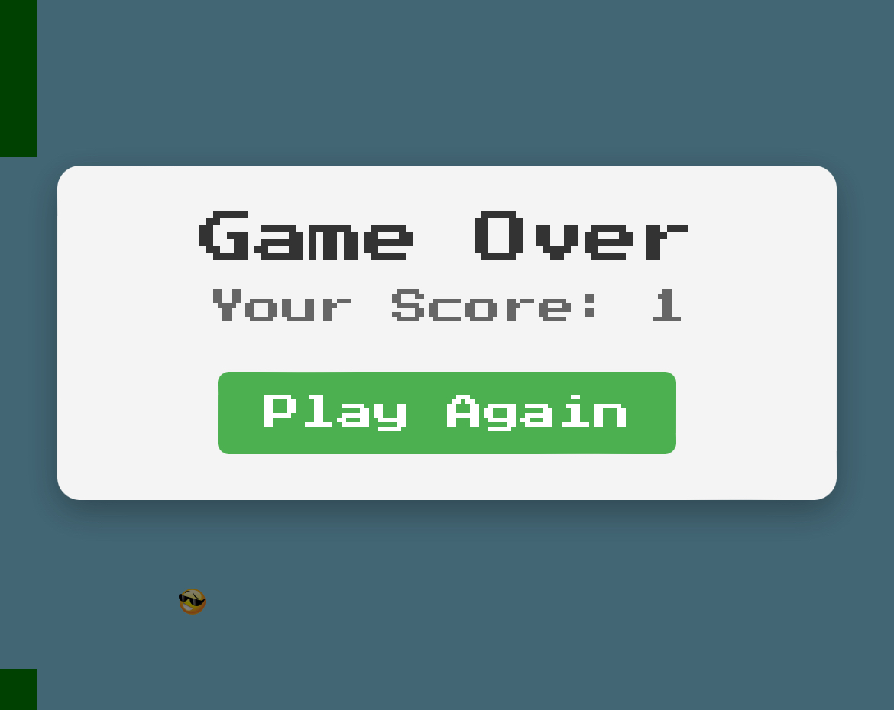
Better Collision
- fixed bug where visual box is out of sync with game
Cool New Flappy Guy
- Character updated to a cool guy
- Better jump physics for this cool flapping guy
Special eyes, specialize, special lies
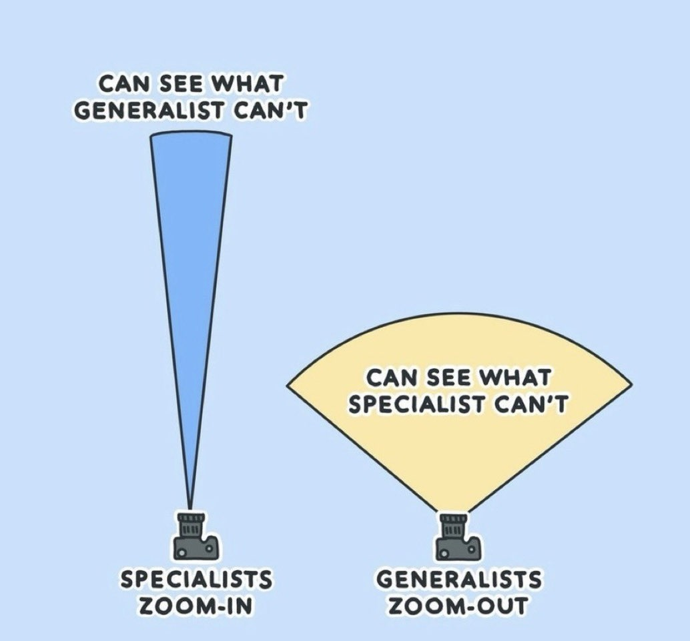
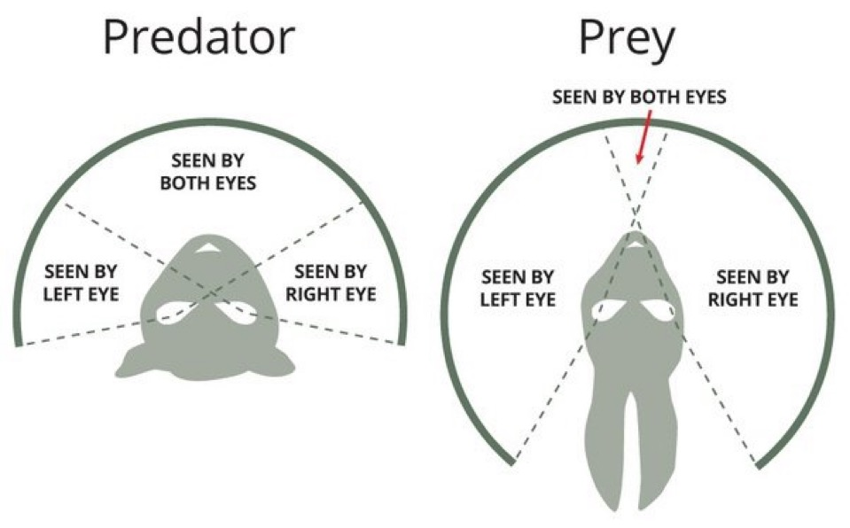
Specialization has long been considered essential for human progress, with society relying on experts in various fields to advance knowledge. However, the past 15 years have witnessed a significant shift in this paradigm. The internet has democratized access to information, creating opportunities for multi-disciplinary expertise that were once limited to the privileged few.
While time remains a constraint, the digital age has made it possible for individuals to learn virtually anything, given sufficient dedication. This development blurs the lines in the specialist versus generalist debate, introducing nuances to our understanding of expertise.
Setting aside the internet's potential drawbacks, it has become a platform where one can encounter authorities from diverse fields in a single space. Social media platforms like X (formerly Twitter) have become particularly valuable for following thought leaders and industries that might otherwise seem inaccessible or irrelevant to one's primary focus.
A fascinating phenomenon has emerged from this accessibility: the ability to construct a comprehensive worldview based on insights from experts across multiple disciplines. By engaging with specialists in technology, politics, religion, history, philosophy, and other fields, one can gain a more holistic understanding of various industries and global issues.
This convergence of expert knowledge online creates a mutually beneficial ecosystem. Experts seeking to share their insights find an eager audience, while knowledge seekers gain access to a wealth of specialized information. This symbiotic relationship facilitates a broader, more interconnected approach to learning and understanding the complexities of our world.
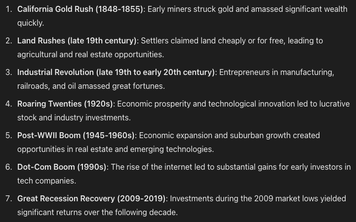
What comes with opportunistic eras, is obligation and responsibility. How many say, “well, I would have [sold a startup during the dot com bubble] [bought Bitcoin in 2011], but I was only [not old enough] years old!”
Imagine what your descendents will say when they learn of this period and realize you were one of the unlucky (or uncommitted?) souls who could not save his bloodline from perpetual poverty. This is why we must learn, create and produce at rates we have not seen before. None of us will be the ones to create OpenAI (create Facebook), but there are many of us who can find success “building on buildings” (never forget that Zynga, creator of Farmville, was sold to Take-Two Interactive).
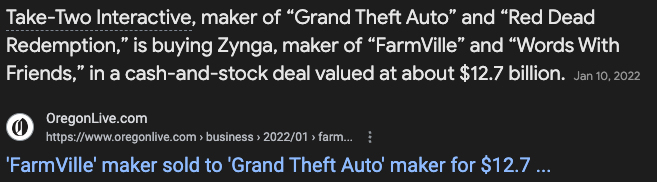
And what’s next
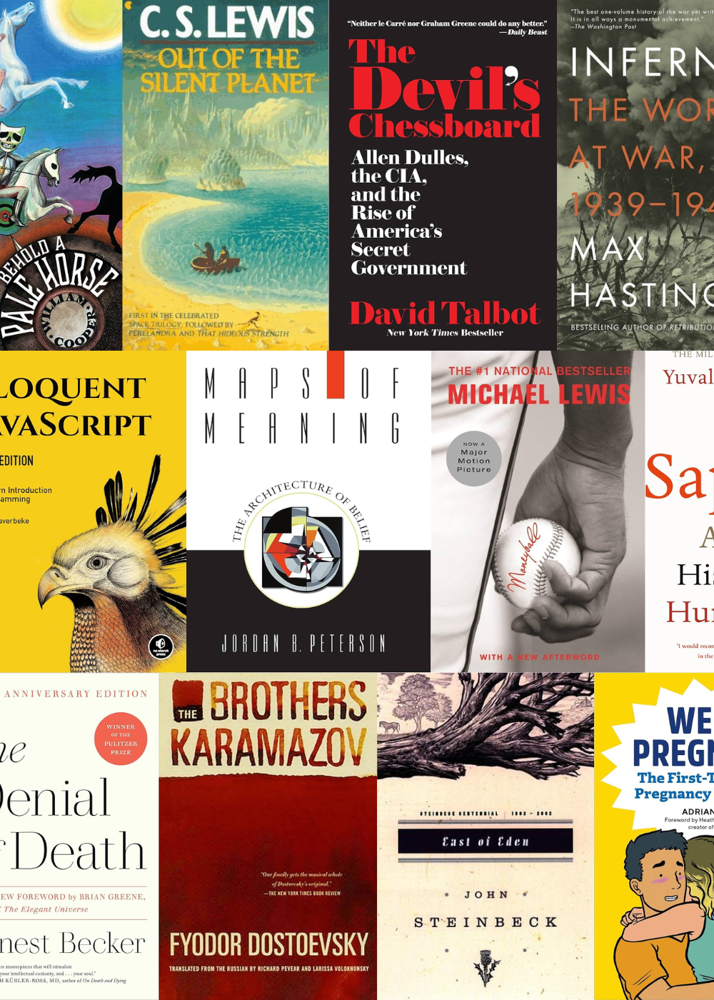
I own a lot of books and often switch between physical books, e-books, and Audible to spend long hours reading.
Some of…
What I’m Reading:
- Behold A Pale Horse, William Cooper
- Out Of The Silent Planet, C.S. Lewis
- The Devil's Chessboard, David Talbot
- Eloquent JavaScript, Marijn Haverbeke
What I’ve Read:
- Sapiens, Yuval Noah Harari
- The Denial of Death, Ernest Becker
- Maps of Meaning, Jordan Peterson
- Brave New World, Aldous Huxley
What I Will Read:
- Moneyball, Michael Lewis
- East of Eden, John Steinbeck
- Inferno, Max Hastings
This list is for 2024, and is not complete.
The search for healthy skepticism
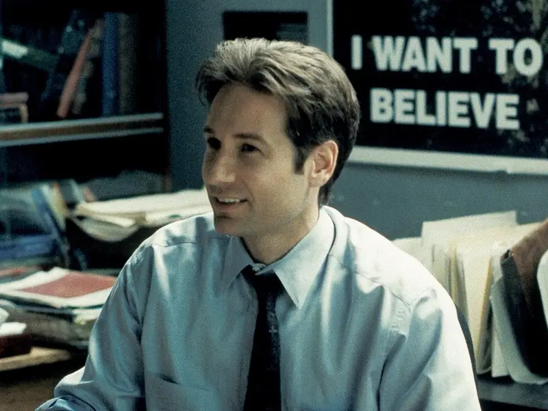
A guiding principle in my life is that "there is no bad information." I've always been drawn to fringe topics: UFOs, ghosts, conspiracies, alternative history, and the like. For me, these subjects scratch the same itch that science fiction might for others. Delving into these areas requires parallel research to maintain one's perspective and sanity.
Recently, it feels as if the instincts I've developed exploring these topics have become nearly essential for navigating society. The floodgates have opened, and conspiracy theories I encountered on niche internet forums a decade ago are now part of the public discourse.
This trend is concerning for many reasons. Often, people don't grasp the full implications of the talking points they engage with. The mainstream rise of antisemitism and QAnon theories is particularly alarming and irresponsible, regardless of one's viewpoint. As with most complex issues, many lack the context to fully understand what they're discussing – myself included.
Knowledge – or misinformation – can spread as rapidly and dangerously as a virus when scaled up. An idea can permeate any culture or location under the right circumstances. However, this phenomenon also presents an opportunity for observation and analysis.
I believe we're experiencing some form of disclosure or a significant paradigm shift. I make no value judgments on this, only observations. The source – be it a "deep state," political party, corporation, or divine entity – is less important than the information itself.
I'm not claiming there's necessarily truth in these theories (I couldn't possibly know). Rather, the value lies not in the surface-level content, but in the questions it raises:
Why am I encountering this information now? Who wants me to see it? Which aspects are crucial, and which might be misdirection? What are the historical and future implications? How widespread is this information? Do others have the same knowledge I do, or vice versa?
These questions can occupy one indefinitely, but engaging with them is crucial for those who can.
For those able to read between the lines – or willing to learn – the world is an open book right now. Someone wants you to see this. The challenge is to decide: Do you agree that you should see it? Will you accept it at face value or think critically about both the micro and macro implications? Are you capable of such critical thinking?
I believe I am, but I acknowledge that due to circumstances, resources, intelligence, or simple ignorance, I may never fully grasp what it truly means to think critically at the highest level.
What if up really is down, and we've been deceived? Then I've simply become adept at operating within a specific framework, not genuinely skilled at thinking. This applies to basic reading comprehension, but we currently live in an era of deception. Most of what you encounter is trying to influence you, even if sometimes benignly. Is it manipulation when I bake you a birthday cake to make you happy, and it succeeds? Yes.
It's equally crucial not to instantly dismiss any idea as "too outlandish." Even if it ultimately proves to be far-fetched, do the work to confirm that. If there's one genuine lesson I've gleaned from all this, it's that I've never truly been in contact with the larger mechanisms at play. It's almost as if we're confined to a "citizen zone," while those who turn the cogs of history exist in a completely separate realm. I speak metaphorically, of course, but even literal comparisons can be drawn. You don't need to believe in conspiracy theories to recognize this divide.
Nothing is too implausible to be true. Declassified documents from the 20th century prove this, not to mention historical records from the past 2000 years and the ongoing archaeological debates. We seem so disoriented that we're not only unaware of our place in history but fail to realize we're still living in the post-World Wars era. If you're unaware, the world nearly ended then.
Know yourself. Know your God. And be wary of the ideas entering your home.
I’m going Stamets mode
When we gaze at the stars, searching for signs of extraterrestrial life, we might be overlooking the most extraordinary alien presence right beneath our feet. Fungi, those mysterious organisms that are neither plant nor animal, could be the ancient aliens that have shaped our world and guided human development for millions of years.
Long before humans walked the Earth, fungi were already here, possibly touching down on our planet's surface as far back as 500 million years ago. Like interstellar terraformers, these alien lifeforms began the monumental task of transforming barren rock into life-supporting soil, creating the very ground we stand on today. This wasn't just a random act of nature, but perhaps a carefully orchestrated plan to prepare Earth for future inhabitants.
As plants emerged, fungi formed intricate alliances with them through structures called mycorrhizae. This symbiotic relationship allowed plants to thrive on land, but it's more complex than it appears. Sometimes, plants exploit their fungal partners, suggesting a deeper, more contentious influence that these alien fungi exert on terrestrial life.
Perhaps the most astounding evidence of fungi's otherworldly nature is the Common Mycorrhizal Network (CMN). This vast underground web connects different plants through fungal threads, functioning as a biological internet. Could this be an alien communication system, allowing fungi to coordinate their influence across the planet?
The fungal influence extends far beyond natural ecosystems, reaching into the very foundations of human civilization. Our agricultural revolution, which gave rise to modern society, may have been orchestrated by these silent alien overseers. Staple crops like wheat and corn rely heavily on fungal relationships. Are our eating habits unknowingly serving the needs of an alien species?
Some researchers even suggest that fungi have shaped human consciousness and spirituality. The idea of a "Common Mycorrhizal Network of consciousness" hints at a profound alien influence on our mental and spiritual realms. From ancient religious experiences to modern spiritual practices, could fungi be guiding our cognitive evolution?
Fungi's unique form of intelligence, characterized by a "bottom-up" approach, stands in stark contrast to human thinking. Even simple organisms like slime molds can solve complex problems, displaying an alien intellect that challenges our understanding of cognition. More alarmingly, some fungi can control insects, turning them into "zombies." Could our gut bacteria, many with fungal origins, be subtly steering human behavior under alien direction?
This summary of my notes on fungi was written by Claude.
And design merch
Packaging design of four of my solo albums.
93ultra (2017)
SPEED DEMON (2018)
Art Is A Sin (2021)
I Am The Ship (2023)
Many more albums not pictured.
Did we forget?
The following is a metaphor that I wrote in 2022:
Long ago, humanity found itself in low valleys, surrounded by mountainous terrain. Ancient stories spoke of a time when our ancestors cultivated the earth, producing bountiful harvests. Other tales recounted great civilizations like Atlantis, while some narrated a massive flood that cleansed the world. These narratives shared a common theme: water.
As our forebears rested in these valleys, the wisest among them began to ponder this connection. Gazing at the stars, they could discern faint signs of water bodies atop the surrounding hills. Eventually, they concluded that survival necessitated ascending the mountain to access the mythical technology of flowing water.
The logical course of action was to mobilize the tribe for the arduous climb back to a state of grace, within the perceived view of the divine. This journey, while perilous, was deemed necessary for a community mired in the shadows of towering cliffs.
During this multi-year expedition, they encountered a cave. Within this cavern, a series of fissures penetrated the earth above, allowing for a slight trickle of the sought-after resource. Rather than continuing to the summit with its promise of lakes, fauna, flora, and precipitation, they paused for a respite and a taste of impending victory.
As often occurs when momentum wanes, a brief rest extended into a prolonged stay. The approaching winter may have rendered the cave with its meager water supply a temporary salvation. Thus, they remained.
As time passed, the wise elders who had initiated the journey perished, leaving only younger individuals aware of their circumstances. Some attempted to persuade the group to resume their trek, while others ventured forth alone, promising to return upon reaching the peak. Some perished en route, others succeeded but failed to return for their brethren.
Eventually, a day arrived when the tribe collectively forgot the world beyond the cave and their original purpose. Many were born into a system centered on survival and waiting—waiting for a signal to resume their journey to the summit. However, with the original leaders long gone, the reason for this waiting was lost. Waiting became ingrained in their very essence, without understanding its purpose.
This cave metaphorically represents our current state—mentally, physically, and spiritually. There exists an inner "secret" that we all sense but continually skirt. It's plausible that some reached the peak and witnessed the abundance of flowing waters and lush landscapes. Logically, these individuals would have control over what reaches those in the cave. This control need not be malevolent; it could be the long-awaited "message from home." However, by the time it arrives, those in the cave may no longer comprehend its language.
Thus, the communication becomes inadvertently harmful. Attempts to garner attention, such as introducing rocks into the water supply, are misinterpreted. The cave dwellers develop new systems and technologies to filter out these impurities, never questioning the underlying cause of their situation. They master their surroundings, manufacturing complexity from available novelty. Pride in these accomplishments further entrenches them in the cave.
This cycle persists to the present day, where the cave has been transformed into a full-scale city, equipped with all perceived necessities for generational survival.
The question remains: Is survival truly easier here than at the mountain's summit?
Youth outreach
Pictured is a sample flier for a beginner-level course I was asked to design, but never got to teach. The client was a new piano school in my area that was flirting with the idea of adding music production to their lesson options. They approved the course, but never followed through with implementation.
And there was a window
7-22-24
I don’t regret spending ten years on music and audio. The only thing I regret is not having a side project. There is a unique-to-our-lives window that is open right now. Thanks to AI tools, people like me (and you?) can skip most of the busy work involved in the process of learning new things.
Before I went to school for music and audio, I had been teaching myself from the ground up. The time it takes to make one song is the time it takes to:
Learn basic music theory
Learn basic piano
Learn to sing
Learn to write
Learn to use Logic Pro
Learn to mix
Learn to master
Etc.
I learned this all by making albums. It took years. I loved it.
This is still a valuable way to approach everything and anything. Take it all in. Have the audacity to learn something. Commit fully.
And add ChatGPT. I can’t even begin to express the time I would have saved being able to ask specific, nuanced questions and get straight answers. Maybe my growth would have been much faster.
I’ve learned more about the nature of JavaScript programming through my use of chatbots than I did through a lot of learn-coding programs (paid and free). I’m still a beginner in the truest sense, but not being capped by my current knowledge is changing everything.
I no longer worry about the logistics of learning all of the parts involved with even being able to decide if a project is feasible. For the longest time, I wanted to practice, but I just truly didn’t know what that meant. Now I can just solve my own problems. Or make a cool thing. Or something that excites people. Or something just for fun. Just like making music.
Having context creates the storage space in my mind that can be genuinely connected to a larger knowledge network of JavaScript.
Otherwise, it is all just nonsense and memorization.
I think we all have more responsibility coming within our lifetimes, not less. Sitting back will be for our kids, or theirs.
Why? Because look at how much more powerful we’re becoming.
Cracked Hall of Fame
Help! It’s so dark! I can’t see a thing…
I am back at work on my dark mode/light mode switch that I described in my last post. I got a bit lost in the creation of this so I stepped back to work through the processes required to achieve my very powerful Theme Swapper. I adjusted my approach as well, now trying very hard to make Google Apps Script work for me.
Here is a breakdown of how this project is supposed to work:
Description
This project aims to create a Google Docs integration that allows users to dynamically switch between light and dark themes for embedded Google Docs via a toggle button on a website. It involves a Google Apps Script web app that receives theme change requests from the website and applies the corresponding styles to the Google Doc, ensuring consistent theming across both the website and the embedded document.
Building on buildings
Beware tunnel vision. Spent all day trying to create and implement a dark mode/light mode toggle to this site. If you don’t know, this is a Yacine/Kache site clone (google it), meaning that it is a basic skeleton site (title down to “recent posts section”) that hosts a Google Doc. It uses JavaScript to convert the contents of the doc into static html elements on the page.The biggest problem was figuring out how to actually alter the gdoc elements. Seems simple enough, but obviously not.
I was successful in making the button work and, more importantly, swap colors schemes on the whole page INCLUDING the elements of the gdoc. But I broke the entire page in the process. Whoooops! I also need to think about how to define/recreate every possible styling in gdoc. I would really like to keep using
tables, images, and text styling without worrying about how it will translate. |
May have to make my own docs clone.I saved the code but reverted for the time being. Going to work on it tomorrow.
When you ask with grace, you always get a response.
7-16-24
Notes dump.
Be grateful that the door is still there. Broken from use, you know it well. How lucky you are. You see again that when you approach the unapproachable, there are others to help.
Control your unconscious anger or the cycle continues. Give yourself to family and maintain faith that it will be right. Avoid pursuit of “your life,” there is only our life. Children can sense your energy as you could and still can. Don’t torture yourself, you’ll get tortured enough. How can you seek or hide from the creator's attention if you have stains on your soul?
New very original web app in progress
try it out here
Cracked Hall of Fame
I am the king of novelty Discord bots (it’s a great way to learn a language)
!register <RiotAccount> <Tagline>
If a registered user starts a League of Legends or Valorant game with 0 kills and…
3 deaths: “@everyone: @username is feeding!”
5 deaths: “@everyone: @username is inting!”
also:
Pentakill & Ace messages
4/0 start: “@username is fed!” messages
Etc.
The Riot API is very easy to work with (not surprisingly). Yahoo! Makes it seem like they don’t actually want you to build anything with their Sports API (delaying Assistant Coach fantasy football bot).
My sole motivation in the portfolio phase of my coding career is to annoy and bother my friends - or make them laugh. Either/or! This bot is way harder to test because loading in and out of games - and getting kills or killed - takes too long. I’m going to look into ways to trick the bot this week for (reliable) testing.
Python is scary because even if you only know JS, you can install a virtual environment with ease, and then if VS Code has a bug (it does right now), you’ll panic and not know how to deactivate it.
Next Discord bot in C? LOL.
Less than one minute old!
You wouldn’t mock a proud father for his newborn’s lack of intelligence (or his lack of fathering experience)... would you?
My display name is smokeweed here, but it’s simply horseplay. My friends allow me to test my bots on their server, the least I can do is entertain.
My first-born is merely moments old, crafted from the cosmic dust of another (gpt 2). I will nurture him so he grows strong and one day he will return the favor.
This is a test build for the server my friends use while gaming.
(Thirty Seconds Until) Bindus Prawn (hence, bindusBot)
What if AI isn’t on either end of the doom spectrum, and is just a tool from God like any other mundane human thought is. Meant to fill the void between us that the collapse of common trust left.
And all that was left was his love.
Never drown!
Made this vid.
Cracked Hall of Fame
Squirrels deserve respect as much as any human does! They are my brothers and I wish to gain their trust.
How can I convince them I am a friend?
Everyone is always saying “just focus on the melody!” “One sample is enough if you really refine it!”
Sorry i need to find a song that has the perfect tonal and rhythmic qualities to match the other 69 incoherent samples i’ve collected
trying things.
give me a year.
One early-summer evening a family gathers in their kitchen. Janet lovingly labored at the stove all day, using a new recipe to prepare meat and potatoes for their dinner.
She puts a plate in front of her husband, Blake, who usually works late nights, but happens to be home early for Janet’s new experiment. How lucky!
All day long Janet fantasized as she worked about how happy her family would be with her when they saw how much care she put into the night’s dinner.
Their son, enters and sits at the table as his mother places a warm plate in front of him before returning to finish making her own plate. Peter, the small town’s star quarterback, just returned from practice and is starved. He looks down to assess his dinner. Meat, potatoes, vegetables, bread. Delicious.
Peter can’t wait and digs in, but immediately Blake notices the look on his son’s face change.
“This is so dry” mumbles Peter, but before he can even finish his sentence, his father cuts in,
“Shhh your mother worked all day on this.” Blake then takes a bite of his own and begins to understand his son’s dilemma.
“Janet, this is amazing! Is this a new recipe? I just love you so much yanno always progressing and keeping things fresh” Janet smiles as she places dirty cookware into the sink for later.
‘Oh, but dear?” asks Blake across the kitchen. “Yes, darling?” replies his tired wife Janet.
“Would you mind bringing some condiments over when you sit? I doubt we’ll need them, but just in case! Butter, salt, maybe A1…” he trails off.
“What?” says Janet
“Could you bring some condiments over” repeats Blake
“What?” yells Janet
The sound of the running water drowns out the sounds of her husbands shy requests
“Bring salt and A1 sauce when you come to sit down!”
“For what!?”
“For dinner!”
“For WHAT!? I can’t hear you!” shouts Janet
“Oh, for PETE’S STEAK!!”
(and retail managers did more)
6-22-24
Agreed to mix and master an album by July. But I'm retired!
I wonder if they’ll want physicals printed.
Finance exam next Friday. But I dropped out of business school 6 years ago!
I wonder if FINRA checks BMI. I didn’t know these songs were in the glovebox but I swear they’re registered!
New website/projects/ideas to do yesterday. But I don't know how to code!
I wonder if I need to learn anything at all or if my God-given digital intuition is all there ever was.
Thank God I’ve mixed hundreds of songs and got my degree in music production just bc i felt like it and have run three businesses (into the ground) and spent 5 years making websites with html 4 before another 10 making sites w/ cms/frankenstein html & css.
It’s the exact experience I need to get these 3 months done. What a coincidence!
Everyone else is smarter and took the time to specialize so they could be good at something but at 28, that affords me the chance to have a little bit of literally everything.
I am every version of myself because I won't abandon any of them. It's only me and a group of me’s all fighting each other while we row this boat in rhythm like the ancestors we didn't know but chased anyway.
> i don't gotta try too hard - got you mad, mad, mad!
I can literally do anything and thats why i cant do anything so instead i’ll do everything
You: Software :)
Me: Soft where?
There isn’t time to pursue talent!! Nothing is hard, everything is a transaction and time is the only currency! grow up!
>”nooooo you can’t just swim across domains taking only as much or as little as you need to progress on your journey that has nothing to do with any domain except for Heaven!!!”
Posting and blogging and making and vibing
5-14-24
Stealing code is like sampling and committing to github is like exporting the master channel and functions are like snares and you can google “murda beatz snare kit 2020 reddit” but for javascript and get the same results
HTML➡️MIDI
CSS➡️MIX
JS➡️AUTOMATION
Who is murda beatz and who are the swedish guys making the melodies?
Everything is the same everywhere if you're awake.
Imagine what smarter goals do!
__________________________________________________________________________________
__________________________________________________________________________________